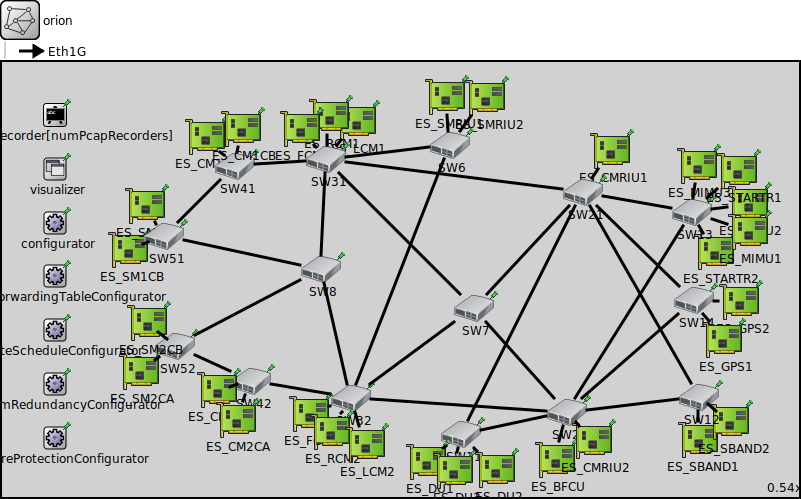

Package: combinedshapers.simulations.CBS_TAS.Orion.TC1_2_doubleAVBLoad
orion
network(no description)
Usage diagram
The following diagram shows usage relationships between types. Unresolved types are missing from the diagram.
Inheritance diagram
The following diagram shows inheritance relationships for this type. Unresolved types are missing from the diagram.
Extends
| Name | Type | Description |
|---|---|---|
| TsnNetworkBase | network |
This module serves as a network base module for Time-Sensitive Networking (TSN). |
Parameters
| Name | Type | Default value | Description |
|---|---|---|---|
| recordPcap | bool | false | |
| numPcapRecorders | int | recordPcap ? 1 : 0 | |
| hasGlobalArp | bool | true |
Properties
| Name | Value | Description |
|---|---|---|
| isNetwork | ||
| class | NetworkBase | |
| display | bgb=1485,811 |
Unassigned submodule parameters
| Name | Type | Default value | Description |
|---|---|---|---|
| pcapRecorder.verbose | bool | true |
whether to log packets on the module output |
| pcapRecorder.pcapFile | string | "" |
the PCAP file to be written |
| pcapRecorder.fileFormat | string | "pcapng" | |
| pcapRecorder.snaplen | int | 65535 |
maximum number of bytes to record per packet |
| pcapRecorder.dumpBadFrames | bool | true |
enable dump of frames with hasBitError |
| pcapRecorder.sendingSignalNames | string | "packetSentToLower" |
space-separated list of outbound packet signals to subscribe to |
| pcapRecorder.receivingSignalNames | string | "packetReceivedFromLower" |
space-separated list of inbound packet signals to subscribe to |
| pcapRecorder.dumpProtocols | string | "ethernetmac ppp ieee80211mac" |
space-separated list of protocol names as defined in the Protocol class |
| pcapRecorder.packetFilter | object | "*" |
which packets are considered, matches all packets by default |
| pcapRecorder.helpers | string | "" |
usable PcapRecorder::IHelper helpers for accept packettype and store/convert packet as specified linktype currently available: "inet::AckingMacToEthernetPcapRecorderHelper" |
| pcapRecorder.alwaysFlush | bool | false |
flush the pcapFile after each write to ensure that all packets are captured in case of a crash |
| pcapRecorder.displayStringTextFormat | string | "rec: %n pks" | |
| SW22.macTable.agingTime | double | ||
| SW22.macTable.forwardingTableFile | string | ||
| SW22.interfaceTable.displayAddresses | bool | false |
whether to display IP addresses on links |
| SW22.l2NodeConfigurator.interfaceTableModule | string | ||
| SW22.l2NodeConfigurator.l2ConfiguratorModule | string | "l2NetworkConfigurator" |
the absolute path to the ~L2NetworkConfigurator; use "" if there is no configurator |
| SW22.status.initialStatus | string | "UP" |
TODO @signal, @statistic |
| SW22.pcapRecorder.verbose | bool | true |
whether to log packets on the module output |
| SW22.pcapRecorder.pcapFile | string | "" |
the PCAP file to be written |
| SW22.pcapRecorder.fileFormat | string | "pcapng" | |
| SW22.pcapRecorder.snaplen | int | 65535 |
maximum number of bytes to record per packet |
| SW22.pcapRecorder.dumpBadFrames | bool | true |
enable dump of frames with hasBitError |
| SW22.pcapRecorder.moduleNamePatterns | string | "wlan[*] eth[*] ppp[*]" |
space-separated list of sibling module names to listen on |
| SW22.pcapRecorder.sendingSignalNames | string | "packetSentToLower" |
space-separated list of outbound packet signals to subscribe to |
| SW22.pcapRecorder.receivingSignalNames | string | "packetReceivedFromLower" |
space-separated list of inbound packet signals to subscribe to |
| SW22.pcapRecorder.dumpProtocols | string | "ethernetmac ppp ieee80211mac" |
space-separated list of protocol names as defined in the Protocol class |
| SW22.pcapRecorder.packetFilter | object | "*" |
which packets are considered, matches all packets by default |
| SW22.pcapRecorder.helpers | string | "" |
usable PcapRecorder::IHelper helpers for accept packettype and store/convert packet as specified linktype currently available: "inet::AckingMacToEthernetPcapRecorderHelper" |
| SW22.pcapRecorder.alwaysFlush | bool | false |
flush the pcapFile after each write to ensure that all packets are captured in case of a crash |
| SW22.pcapRecorder.displayStringTextFormat | string | "rec: %n pks" | |
| SW22.stp.helloTime | double | ||
| SW22.stp.forwardDelay | double | ||
| SW22.stp.maxAge | double | ||
| SW22.stp.bridgePriority | int | ||
| SW22.stp.visualize | bool | ||
| SW22.sc.displayStringTextFormat | string | "processed %p pk (%l)" |
determines the text that is written on top of the submodule |
| SW22.sc.forwardServiceRegistration | bool | true | |
| SW22.sc.forwardProtocolRegistration | bool | true | |
| SW22.cb.displayStringTextFormat | string | "processed %p pk (%l)" |
determines the text that is written on top of the submodule |
| SW22.cb.forwardServiceRegistration | bool | true | |
| SW22.cb.forwardProtocolRegistration | bool | true | |
| SW22.bl.displayStringTextFormat | string | "processed %p pk (%l)" |
determines the text that is written on top of the submodule |
| SW22.bl.forwardServiceRegistration | bool | true | |
| SW22.bl.forwardProtocolRegistration | bool | true | |
| SW22.li.displayStringTextFormat | string | "processed %p pk (%l)" |
determines the text that is written on top of the submodule |
| SW22.li.forwardServiceRegistration | bool | true | |
| SW22.li.forwardProtocolRegistration | bool | true | |
| SW22.eth.bitrate | double | ||
| ES_SM2CA.status.initialStatus | string | "UP" |
TODO @signal, @statistic |
| ES_SM2CA.pcapRecorder.verbose | bool | true |
whether to log packets on the module output |
| ES_SM2CA.pcapRecorder.pcapFile | string | "" |
the PCAP file to be written |
| ES_SM2CA.pcapRecorder.fileFormat | string | "pcapng" | |
| ES_SM2CA.pcapRecorder.snaplen | int | 65535 |
maximum number of bytes to record per packet |
| ES_SM2CA.pcapRecorder.dumpBadFrames | bool | true |
enable dump of frames with hasBitError |
| ES_SM2CA.pcapRecorder.moduleNamePatterns | string | "wlan[*] eth[*] ppp[*]" |
space-separated list of sibling module names to listen on |
| ES_SM2CA.pcapRecorder.sendingSignalNames | string | "packetSentToLower" |
space-separated list of outbound packet signals to subscribe to |
| ES_SM2CA.pcapRecorder.receivingSignalNames | string | "packetReceivedFromLower" |
space-separated list of inbound packet signals to subscribe to |
| ES_SM2CA.pcapRecorder.dumpProtocols | string | "ethernetmac ppp ieee80211mac" |
space-separated list of protocol names as defined in the Protocol class |
| ES_SM2CA.pcapRecorder.packetFilter | object | "*" |
which packets are considered, matches all packets by default |
| ES_SM2CA.pcapRecorder.helpers | string | "" |
usable PcapRecorder::IHelper helpers for accept packettype and store/convert packet as specified linktype currently available: "inet::AckingMacToEthernetPcapRecorderHelper" |
| ES_SM2CA.pcapRecorder.alwaysFlush | bool | false |
flush the pcapFile after each write to ensure that all packets are captured in case of a crash |
| ES_SM2CA.pcapRecorder.displayStringTextFormat | string | "rec: %n pks" | |
| ES_SM2CA.interfaceTable.displayAddresses | bool | false |
whether to display IP addresses on links |
| ES_SM2CA.cb.displayStringTextFormat | string | "processed %p pk (%l)" |
determines the text that is written on top of the submodule |
| ES_SM2CA.cb.forwardServiceRegistration | bool | true | |
| ES_SM2CA.cb.forwardProtocolRegistration | bool | true | |
| ES_SM2CA.bl.displayStringTextFormat | string | "processed %p pk (%l)" |
determines the text that is written on top of the submodule |
| ES_SM2CA.bl.forwardServiceRegistration | bool | true | |
| ES_SM2CA.bl.forwardProtocolRegistration | bool | true | |
| ES_SM2CA.li.displayStringTextFormat | string | "processed %p pk (%l)" |
determines the text that is written on top of the submodule |
| ES_SM2CA.li.forwardServiceRegistration | bool | true | |
| ES_SM2CA.li.forwardProtocolRegistration | bool | true | |
| ES_SM2CA.eth.bitrate | double | ||
| ES_SM2CA.nl.displayStringTextFormat | string | "processed %p pk (%l)" |
determines the text that is written on top of the submodule |
| ES_SM2CA.nl.forwardServiceRegistration | bool | true | |
| ES_SM2CA.nl.forwardProtocolRegistration | bool | true | |
| ES_SM2CA.tn.displayStringTextFormat | string | "processed %p pk (%l)" |
determines the text that is written on top of the submodule |
| ES_SM2CA.tn.forwardServiceRegistration | bool | true | |
| ES_SM2CA.tn.forwardProtocolRegistration | bool | true | |
| ES_SM2CA.at.displayStringTextFormat | string | "processed %p pk (%l)" |
determines the text that is written on top of the submodule |
| ES_SM2CA.at.forwardServiceRegistration | bool | true | |
| ES_SM2CA.at.forwardProtocolRegistration | bool | true | |
| ES_SMRIU2.status.initialStatus | string | "UP" |
TODO @signal, @statistic |
| ES_SMRIU2.pcapRecorder.verbose | bool | true |
whether to log packets on the module output |
| ES_SMRIU2.pcapRecorder.pcapFile | string | "" |
the PCAP file to be written |
| ES_SMRIU2.pcapRecorder.fileFormat | string | "pcapng" | |
| ES_SMRIU2.pcapRecorder.snaplen | int | 65535 |
maximum number of bytes to record per packet |
| ES_SMRIU2.pcapRecorder.dumpBadFrames | bool | true |
enable dump of frames with hasBitError |
| ES_SMRIU2.pcapRecorder.moduleNamePatterns | string | "wlan[*] eth[*] ppp[*]" |
space-separated list of sibling module names to listen on |
| ES_SMRIU2.pcapRecorder.sendingSignalNames | string | "packetSentToLower" |
space-separated list of outbound packet signals to subscribe to |
| ES_SMRIU2.pcapRecorder.receivingSignalNames | string | "packetReceivedFromLower" |
space-separated list of inbound packet signals to subscribe to |
| ES_SMRIU2.pcapRecorder.dumpProtocols | string | "ethernetmac ppp ieee80211mac" |
space-separated list of protocol names as defined in the Protocol class |
| ES_SMRIU2.pcapRecorder.packetFilter | object | "*" |
which packets are considered, matches all packets by default |
| ES_SMRIU2.pcapRecorder.helpers | string | "" |
usable PcapRecorder::IHelper helpers for accept packettype and store/convert packet as specified linktype currently available: "inet::AckingMacToEthernetPcapRecorderHelper" |
| ES_SMRIU2.pcapRecorder.alwaysFlush | bool | false |
flush the pcapFile after each write to ensure that all packets are captured in case of a crash |
| ES_SMRIU2.pcapRecorder.displayStringTextFormat | string | "rec: %n pks" | |
| ES_SMRIU2.interfaceTable.displayAddresses | bool | false |
whether to display IP addresses on links |
| ES_SMRIU2.cb.displayStringTextFormat | string | "processed %p pk (%l)" |
determines the text that is written on top of the submodule |
| ES_SMRIU2.cb.forwardServiceRegistration | bool | true | |
| ES_SMRIU2.cb.forwardProtocolRegistration | bool | true | |
| ES_SMRIU2.bl.displayStringTextFormat | string | "processed %p pk (%l)" |
determines the text that is written on top of the submodule |
| ES_SMRIU2.bl.forwardServiceRegistration | bool | true | |
| ES_SMRIU2.bl.forwardProtocolRegistration | bool | true | |
| ES_SMRIU2.li.displayStringTextFormat | string | "processed %p pk (%l)" |
determines the text that is written on top of the submodule |
| ES_SMRIU2.li.forwardServiceRegistration | bool | true | |
| ES_SMRIU2.li.forwardProtocolRegistration | bool | true | |
| ES_SMRIU2.eth.bitrate | double | ||
| ES_SMRIU2.nl.displayStringTextFormat | string | "processed %p pk (%l)" |
determines the text that is written on top of the submodule |
| ES_SMRIU2.nl.forwardServiceRegistration | bool | true | |
| ES_SMRIU2.nl.forwardProtocolRegistration | bool | true | |
| ES_SMRIU2.tn.displayStringTextFormat | string | "processed %p pk (%l)" |
determines the text that is written on top of the submodule |
| ES_SMRIU2.tn.forwardServiceRegistration | bool | true | |
| ES_SMRIU2.tn.forwardProtocolRegistration | bool | true | |
| ES_SMRIU2.at.displayStringTextFormat | string | "processed %p pk (%l)" |
determines the text that is written on top of the submodule |
| ES_SMRIU2.at.forwardServiceRegistration | bool | true | |
| ES_SMRIU2.at.forwardProtocolRegistration | bool | true | |
| ES_FCM2.status.initialStatus | string | "UP" |
TODO @signal, @statistic |
| ES_FCM2.pcapRecorder.verbose | bool | true |
whether to log packets on the module output |
| ES_FCM2.pcapRecorder.pcapFile | string | "" |
the PCAP file to be written |
| ES_FCM2.pcapRecorder.fileFormat | string | "pcapng" | |
| ES_FCM2.pcapRecorder.snaplen | int | 65535 |
maximum number of bytes to record per packet |
| ES_FCM2.pcapRecorder.dumpBadFrames | bool | true |
enable dump of frames with hasBitError |
| ES_FCM2.pcapRecorder.moduleNamePatterns | string | "wlan[*] eth[*] ppp[*]" |
space-separated list of sibling module names to listen on |
| ES_FCM2.pcapRecorder.sendingSignalNames | string | "packetSentToLower" |
space-separated list of outbound packet signals to subscribe to |
| ES_FCM2.pcapRecorder.receivingSignalNames | string | "packetReceivedFromLower" |
space-separated list of inbound packet signals to subscribe to |
| ES_FCM2.pcapRecorder.dumpProtocols | string | "ethernetmac ppp ieee80211mac" |
space-separated list of protocol names as defined in the Protocol class |
| ES_FCM2.pcapRecorder.packetFilter | object | "*" |
which packets are considered, matches all packets by default |
| ES_FCM2.pcapRecorder.helpers | string | "" |
usable PcapRecorder::IHelper helpers for accept packettype and store/convert packet as specified linktype currently available: "inet::AckingMacToEthernetPcapRecorderHelper" |
| ES_FCM2.pcapRecorder.alwaysFlush | bool | false |
flush the pcapFile after each write to ensure that all packets are captured in case of a crash |
| ES_FCM2.pcapRecorder.displayStringTextFormat | string | "rec: %n pks" | |
| ES_FCM2.interfaceTable.displayAddresses | bool | false |
whether to display IP addresses on links |
| ES_FCM2.cb.displayStringTextFormat | string | "processed %p pk (%l)" |
determines the text that is written on top of the submodule |
| ES_FCM2.cb.forwardServiceRegistration | bool | true | |
| ES_FCM2.cb.forwardProtocolRegistration | bool | true | |
| ES_FCM2.bl.displayStringTextFormat | string | "processed %p pk (%l)" |
determines the text that is written on top of the submodule |
| ES_FCM2.bl.forwardServiceRegistration | bool | true | |
| ES_FCM2.bl.forwardProtocolRegistration | bool | true | |
| ES_FCM2.li.displayStringTextFormat | string | "processed %p pk (%l)" |
determines the text that is written on top of the submodule |
| ES_FCM2.li.forwardServiceRegistration | bool | true | |
| ES_FCM2.li.forwardProtocolRegistration | bool | true | |
| ES_FCM2.eth.bitrate | double | ||
| ES_FCM2.nl.displayStringTextFormat | string | "processed %p pk (%l)" |
determines the text that is written on top of the submodule |
| ES_FCM2.nl.forwardServiceRegistration | bool | true | |
| ES_FCM2.nl.forwardProtocolRegistration | bool | true | |
| ES_FCM2.tn.displayStringTextFormat | string | "processed %p pk (%l)" |
determines the text that is written on top of the submodule |
| ES_FCM2.tn.forwardServiceRegistration | bool | true | |
| ES_FCM2.tn.forwardProtocolRegistration | bool | true | |
| ES_FCM2.at.displayStringTextFormat | string | "processed %p pk (%l)" |
determines the text that is written on top of the submodule |
| ES_FCM2.at.forwardServiceRegistration | bool | true | |
| ES_FCM2.at.forwardProtocolRegistration | bool | true | |
| ES_LCM1.status.initialStatus | string | "UP" |
TODO @signal, @statistic |
| ES_LCM1.pcapRecorder.verbose | bool | true |
whether to log packets on the module output |
| ES_LCM1.pcapRecorder.pcapFile | string | "" |
the PCAP file to be written |
| ES_LCM1.pcapRecorder.fileFormat | string | "pcapng" | |
| ES_LCM1.pcapRecorder.snaplen | int | 65535 |
maximum number of bytes to record per packet |
| ES_LCM1.pcapRecorder.dumpBadFrames | bool | true |
enable dump of frames with hasBitError |
| ES_LCM1.pcapRecorder.moduleNamePatterns | string | "wlan[*] eth[*] ppp[*]" |
space-separated list of sibling module names to listen on |
| ES_LCM1.pcapRecorder.sendingSignalNames | string | "packetSentToLower" |
space-separated list of outbound packet signals to subscribe to |
| ES_LCM1.pcapRecorder.receivingSignalNames | string | "packetReceivedFromLower" |
space-separated list of inbound packet signals to subscribe to |
| ES_LCM1.pcapRecorder.dumpProtocols | string | "ethernetmac ppp ieee80211mac" |
space-separated list of protocol names as defined in the Protocol class |
| ES_LCM1.pcapRecorder.packetFilter | object | "*" |
which packets are considered, matches all packets by default |
| ES_LCM1.pcapRecorder.helpers | string | "" |
usable PcapRecorder::IHelper helpers for accept packettype and store/convert packet as specified linktype currently available: "inet::AckingMacToEthernetPcapRecorderHelper" |
| ES_LCM1.pcapRecorder.alwaysFlush | bool | false |
flush the pcapFile after each write to ensure that all packets are captured in case of a crash |
| ES_LCM1.pcapRecorder.displayStringTextFormat | string | "rec: %n pks" | |
| ES_LCM1.interfaceTable.displayAddresses | bool | false |
whether to display IP addresses on links |
| ES_LCM1.cb.displayStringTextFormat | string | "processed %p pk (%l)" |
determines the text that is written on top of the submodule |
| ES_LCM1.cb.forwardServiceRegistration | bool | true | |
| ES_LCM1.cb.forwardProtocolRegistration | bool | true | |
| ES_LCM1.bl.displayStringTextFormat | string | "processed %p pk (%l)" |
determines the text that is written on top of the submodule |
| ES_LCM1.bl.forwardServiceRegistration | bool | true | |
| ES_LCM1.bl.forwardProtocolRegistration | bool | true | |
| ES_LCM1.li.displayStringTextFormat | string | "processed %p pk (%l)" |
determines the text that is written on top of the submodule |
| ES_LCM1.li.forwardServiceRegistration | bool | true | |
| ES_LCM1.li.forwardProtocolRegistration | bool | true | |
| ES_LCM1.eth.bitrate | double | ||
| ES_LCM1.nl.displayStringTextFormat | string | "processed %p pk (%l)" |
determines the text that is written on top of the submodule |
| ES_LCM1.nl.forwardServiceRegistration | bool | true | |
| ES_LCM1.nl.forwardProtocolRegistration | bool | true | |
| ES_LCM1.tn.displayStringTextFormat | string | "processed %p pk (%l)" |
determines the text that is written on top of the submodule |
| ES_LCM1.tn.forwardServiceRegistration | bool | true | |
| ES_LCM1.tn.forwardProtocolRegistration | bool | true | |
| ES_LCM1.at.displayStringTextFormat | string | "processed %p pk (%l)" |
determines the text that is written on top of the submodule |
| ES_LCM1.at.forwardServiceRegistration | bool | true | |
| ES_LCM1.at.forwardProtocolRegistration | bool | true | |
| ES_BFCU.status.initialStatus | string | "UP" |
TODO @signal, @statistic |
| ES_BFCU.pcapRecorder.verbose | bool | true |
whether to log packets on the module output |
| ES_BFCU.pcapRecorder.pcapFile | string | "" |
the PCAP file to be written |
| ES_BFCU.pcapRecorder.fileFormat | string | "pcapng" | |
| ES_BFCU.pcapRecorder.snaplen | int | 65535 |
maximum number of bytes to record per packet |
| ES_BFCU.pcapRecorder.dumpBadFrames | bool | true |
enable dump of frames with hasBitError |
| ES_BFCU.pcapRecorder.moduleNamePatterns | string | "wlan[*] eth[*] ppp[*]" |
space-separated list of sibling module names to listen on |
| ES_BFCU.pcapRecorder.sendingSignalNames | string | "packetSentToLower" |
space-separated list of outbound packet signals to subscribe to |
| ES_BFCU.pcapRecorder.receivingSignalNames | string | "packetReceivedFromLower" |
space-separated list of inbound packet signals to subscribe to |
| ES_BFCU.pcapRecorder.dumpProtocols | string | "ethernetmac ppp ieee80211mac" |
space-separated list of protocol names as defined in the Protocol class |
| ES_BFCU.pcapRecorder.packetFilter | object | "*" |
which packets are considered, matches all packets by default |
| ES_BFCU.pcapRecorder.helpers | string | "" |
usable PcapRecorder::IHelper helpers for accept packettype and store/convert packet as specified linktype currently available: "inet::AckingMacToEthernetPcapRecorderHelper" |
| ES_BFCU.pcapRecorder.alwaysFlush | bool | false |
flush the pcapFile after each write to ensure that all packets are captured in case of a crash |
| ES_BFCU.pcapRecorder.displayStringTextFormat | string | "rec: %n pks" | |
| ES_BFCU.interfaceTable.displayAddresses | bool | false |
whether to display IP addresses on links |
| ES_BFCU.cb.displayStringTextFormat | string | "processed %p pk (%l)" |
determines the text that is written on top of the submodule |
| ES_BFCU.cb.forwardServiceRegistration | bool | true | |
| ES_BFCU.cb.forwardProtocolRegistration | bool | true | |
| ES_BFCU.bl.displayStringTextFormat | string | "processed %p pk (%l)" |
determines the text that is written on top of the submodule |
| ES_BFCU.bl.forwardServiceRegistration | bool | true | |
| ES_BFCU.bl.forwardProtocolRegistration | bool | true | |
| ES_BFCU.li.displayStringTextFormat | string | "processed %p pk (%l)" |
determines the text that is written on top of the submodule |
| ES_BFCU.li.forwardServiceRegistration | bool | true | |
| ES_BFCU.li.forwardProtocolRegistration | bool | true | |
| ES_BFCU.eth.bitrate | double | ||
| ES_BFCU.nl.displayStringTextFormat | string | "processed %p pk (%l)" |
determines the text that is written on top of the submodule |
| ES_BFCU.nl.forwardServiceRegistration | bool | true | |
| ES_BFCU.nl.forwardProtocolRegistration | bool | true | |
| ES_BFCU.tn.displayStringTextFormat | string | "processed %p pk (%l)" |
determines the text that is written on top of the submodule |
| ES_BFCU.tn.forwardServiceRegistration | bool | true | |
| ES_BFCU.tn.forwardProtocolRegistration | bool | true | |
| ES_BFCU.at.displayStringTextFormat | string | "processed %p pk (%l)" |
determines the text that is written on top of the submodule |
| ES_BFCU.at.forwardServiceRegistration | bool | true | |
| ES_BFCU.at.forwardProtocolRegistration | bool | true | |
| SW42.macTable.agingTime | double | ||
| SW42.macTable.forwardingTableFile | string | ||
| SW42.interfaceTable.displayAddresses | bool | false |
whether to display IP addresses on links |
| SW42.l2NodeConfigurator.interfaceTableModule | string | ||
| SW42.l2NodeConfigurator.l2ConfiguratorModule | string | "l2NetworkConfigurator" |
the absolute path to the ~L2NetworkConfigurator; use "" if there is no configurator |
| SW42.status.initialStatus | string | "UP" |
TODO @signal, @statistic |
| SW42.pcapRecorder.verbose | bool | true |
whether to log packets on the module output |
| SW42.pcapRecorder.pcapFile | string | "" |
the PCAP file to be written |
| SW42.pcapRecorder.fileFormat | string | "pcapng" | |
| SW42.pcapRecorder.snaplen | int | 65535 |
maximum number of bytes to record per packet |
| SW42.pcapRecorder.dumpBadFrames | bool | true |
enable dump of frames with hasBitError |
| SW42.pcapRecorder.moduleNamePatterns | string | "wlan[*] eth[*] ppp[*]" |
space-separated list of sibling module names to listen on |
| SW42.pcapRecorder.sendingSignalNames | string | "packetSentToLower" |
space-separated list of outbound packet signals to subscribe to |
| SW42.pcapRecorder.receivingSignalNames | string | "packetReceivedFromLower" |
space-separated list of inbound packet signals to subscribe to |
| SW42.pcapRecorder.dumpProtocols | string | "ethernetmac ppp ieee80211mac" |
space-separated list of protocol names as defined in the Protocol class |
| SW42.pcapRecorder.packetFilter | object | "*" |
which packets are considered, matches all packets by default |
| SW42.pcapRecorder.helpers | string | "" |
usable PcapRecorder::IHelper helpers for accept packettype and store/convert packet as specified linktype currently available: "inet::AckingMacToEthernetPcapRecorderHelper" |
| SW42.pcapRecorder.alwaysFlush | bool | false |
flush the pcapFile after each write to ensure that all packets are captured in case of a crash |
| SW42.pcapRecorder.displayStringTextFormat | string | "rec: %n pks" | |
| SW42.stp.helloTime | double | ||
| SW42.stp.forwardDelay | double | ||
| SW42.stp.maxAge | double | ||
| SW42.stp.bridgePriority | int | ||
| SW42.stp.visualize | bool | ||
| SW42.sc.displayStringTextFormat | string | "processed %p pk (%l)" |
determines the text that is written on top of the submodule |
| SW42.sc.forwardServiceRegistration | bool | true | |
| SW42.sc.forwardProtocolRegistration | bool | true | |
| SW42.cb.displayStringTextFormat | string | "processed %p pk (%l)" |
determines the text that is written on top of the submodule |
| SW42.cb.forwardServiceRegistration | bool | true | |
| SW42.cb.forwardProtocolRegistration | bool | true | |
| SW42.bl.displayStringTextFormat | string | "processed %p pk (%l)" |
determines the text that is written on top of the submodule |
| SW42.bl.forwardServiceRegistration | bool | true | |
| SW42.bl.forwardProtocolRegistration | bool | true | |
| SW42.li.displayStringTextFormat | string | "processed %p pk (%l)" |
determines the text that is written on top of the submodule |
| SW42.li.forwardServiceRegistration | bool | true | |
| SW42.li.forwardProtocolRegistration | bool | true | |
| SW42.eth.bitrate | double | ||
| ES_SM1CB.status.initialStatus | string | "UP" |
TODO @signal, @statistic |
| ES_SM1CB.pcapRecorder.verbose | bool | true |
whether to log packets on the module output |
| ES_SM1CB.pcapRecorder.pcapFile | string | "" |
the PCAP file to be written |
| ES_SM1CB.pcapRecorder.fileFormat | string | "pcapng" | |
| ES_SM1CB.pcapRecorder.snaplen | int | 65535 |
maximum number of bytes to record per packet |
| ES_SM1CB.pcapRecorder.dumpBadFrames | bool | true |
enable dump of frames with hasBitError |
| ES_SM1CB.pcapRecorder.moduleNamePatterns | string | "wlan[*] eth[*] ppp[*]" |
space-separated list of sibling module names to listen on |
| ES_SM1CB.pcapRecorder.sendingSignalNames | string | "packetSentToLower" |
space-separated list of outbound packet signals to subscribe to |
| ES_SM1CB.pcapRecorder.receivingSignalNames | string | "packetReceivedFromLower" |
space-separated list of inbound packet signals to subscribe to |
| ES_SM1CB.pcapRecorder.dumpProtocols | string | "ethernetmac ppp ieee80211mac" |
space-separated list of protocol names as defined in the Protocol class |
| ES_SM1CB.pcapRecorder.packetFilter | object | "*" |
which packets are considered, matches all packets by default |
| ES_SM1CB.pcapRecorder.helpers | string | "" |
usable PcapRecorder::IHelper helpers for accept packettype and store/convert packet as specified linktype currently available: "inet::AckingMacToEthernetPcapRecorderHelper" |
| ES_SM1CB.pcapRecorder.alwaysFlush | bool | false |
flush the pcapFile after each write to ensure that all packets are captured in case of a crash |
| ES_SM1CB.pcapRecorder.displayStringTextFormat | string | "rec: %n pks" | |
| ES_SM1CB.interfaceTable.displayAddresses | bool | false |
whether to display IP addresses on links |
| ES_SM1CB.cb.displayStringTextFormat | string | "processed %p pk (%l)" |
determines the text that is written on top of the submodule |
| ES_SM1CB.cb.forwardServiceRegistration | bool | true | |
| ES_SM1CB.cb.forwardProtocolRegistration | bool | true | |
| ES_SM1CB.bl.displayStringTextFormat | string | "processed %p pk (%l)" |
determines the text that is written on top of the submodule |
| ES_SM1CB.bl.forwardServiceRegistration | bool | true | |
| ES_SM1CB.bl.forwardProtocolRegistration | bool | true | |
| ES_SM1CB.li.displayStringTextFormat | string | "processed %p pk (%l)" |
determines the text that is written on top of the submodule |
| ES_SM1CB.li.forwardServiceRegistration | bool | true | |
| ES_SM1CB.li.forwardProtocolRegistration | bool | true | |
| ES_SM1CB.eth.bitrate | double | ||
| ES_SM1CB.nl.displayStringTextFormat | string | "processed %p pk (%l)" |
determines the text that is written on top of the submodule |
| ES_SM1CB.nl.forwardServiceRegistration | bool | true | |
| ES_SM1CB.nl.forwardProtocolRegistration | bool | true | |
| ES_SM1CB.tn.displayStringTextFormat | string | "processed %p pk (%l)" |
determines the text that is written on top of the submodule |
| ES_SM1CB.tn.forwardServiceRegistration | bool | true | |
| ES_SM1CB.tn.forwardProtocolRegistration | bool | true | |
| ES_SM1CB.at.displayStringTextFormat | string | "processed %p pk (%l)" |
determines the text that is written on top of the submodule |
| ES_SM1CB.at.forwardServiceRegistration | bool | true | |
| ES_SM1CB.at.forwardProtocolRegistration | bool | true | |
| ES_CMRIU1.status.initialStatus | string | "UP" |
TODO @signal, @statistic |
| ES_CMRIU1.pcapRecorder.verbose | bool | true |
whether to log packets on the module output |
| ES_CMRIU1.pcapRecorder.pcapFile | string | "" |
the PCAP file to be written |
| ES_CMRIU1.pcapRecorder.fileFormat | string | "pcapng" | |
| ES_CMRIU1.pcapRecorder.snaplen | int | 65535 |
maximum number of bytes to record per packet |
| ES_CMRIU1.pcapRecorder.dumpBadFrames | bool | true |
enable dump of frames with hasBitError |
| ES_CMRIU1.pcapRecorder.moduleNamePatterns | string | "wlan[*] eth[*] ppp[*]" |
space-separated list of sibling module names to listen on |
| ES_CMRIU1.pcapRecorder.sendingSignalNames | string | "packetSentToLower" |
space-separated list of outbound packet signals to subscribe to |
| ES_CMRIU1.pcapRecorder.receivingSignalNames | string | "packetReceivedFromLower" |
space-separated list of inbound packet signals to subscribe to |
| ES_CMRIU1.pcapRecorder.dumpProtocols | string | "ethernetmac ppp ieee80211mac" |
space-separated list of protocol names as defined in the Protocol class |
| ES_CMRIU1.pcapRecorder.packetFilter | object | "*" |
which packets are considered, matches all packets by default |
| ES_CMRIU1.pcapRecorder.helpers | string | "" |
usable PcapRecorder::IHelper helpers for accept packettype and store/convert packet as specified linktype currently available: "inet::AckingMacToEthernetPcapRecorderHelper" |
| ES_CMRIU1.pcapRecorder.alwaysFlush | bool | false |
flush the pcapFile after each write to ensure that all packets are captured in case of a crash |
| ES_CMRIU1.pcapRecorder.displayStringTextFormat | string | "rec: %n pks" | |
| ES_CMRIU1.interfaceTable.displayAddresses | bool | false |
whether to display IP addresses on links |
| ES_CMRIU1.cb.displayStringTextFormat | string | "processed %p pk (%l)" |
determines the text that is written on top of the submodule |
| ES_CMRIU1.cb.forwardServiceRegistration | bool | true | |
| ES_CMRIU1.cb.forwardProtocolRegistration | bool | true | |
| ES_CMRIU1.bl.displayStringTextFormat | string | "processed %p pk (%l)" |
determines the text that is written on top of the submodule |
| ES_CMRIU1.bl.forwardServiceRegistration | bool | true | |
| ES_CMRIU1.bl.forwardProtocolRegistration | bool | true | |
| ES_CMRIU1.li.displayStringTextFormat | string | "processed %p pk (%l)" |
determines the text that is written on top of the submodule |
| ES_CMRIU1.li.forwardServiceRegistration | bool | true | |
| ES_CMRIU1.li.forwardProtocolRegistration | bool | true | |
| ES_CMRIU1.eth.bitrate | double | ||
| ES_CMRIU1.nl.displayStringTextFormat | string | "processed %p pk (%l)" |
determines the text that is written on top of the submodule |
| ES_CMRIU1.nl.forwardServiceRegistration | bool | true | |
| ES_CMRIU1.nl.forwardProtocolRegistration | bool | true | |
| ES_CMRIU1.tn.displayStringTextFormat | string | "processed %p pk (%l)" |
determines the text that is written on top of the submodule |
| ES_CMRIU1.tn.forwardServiceRegistration | bool | true | |
| ES_CMRIU1.tn.forwardProtocolRegistration | bool | true | |
| ES_CMRIU1.at.displayStringTextFormat | string | "processed %p pk (%l)" |
determines the text that is written on top of the submodule |
| ES_CMRIU1.at.forwardServiceRegistration | bool | true | |
| ES_CMRIU1.at.forwardProtocolRegistration | bool | true | |
| ES_STARTR2.status.initialStatus | string | "UP" |
TODO @signal, @statistic |
| ES_STARTR2.pcapRecorder.verbose | bool | true |
whether to log packets on the module output |
| ES_STARTR2.pcapRecorder.pcapFile | string | "" |
the PCAP file to be written |
| ES_STARTR2.pcapRecorder.fileFormat | string | "pcapng" | |
| ES_STARTR2.pcapRecorder.snaplen | int | 65535 |
maximum number of bytes to record per packet |
| ES_STARTR2.pcapRecorder.dumpBadFrames | bool | true |
enable dump of frames with hasBitError |
| ES_STARTR2.pcapRecorder.moduleNamePatterns | string | "wlan[*] eth[*] ppp[*]" |
space-separated list of sibling module names to listen on |
| ES_STARTR2.pcapRecorder.sendingSignalNames | string | "packetSentToLower" |
space-separated list of outbound packet signals to subscribe to |
| ES_STARTR2.pcapRecorder.receivingSignalNames | string | "packetReceivedFromLower" |
space-separated list of inbound packet signals to subscribe to |
| ES_STARTR2.pcapRecorder.dumpProtocols | string | "ethernetmac ppp ieee80211mac" |
space-separated list of protocol names as defined in the Protocol class |
| ES_STARTR2.pcapRecorder.packetFilter | object | "*" |
which packets are considered, matches all packets by default |
| ES_STARTR2.pcapRecorder.helpers | string | "" |
usable PcapRecorder::IHelper helpers for accept packettype and store/convert packet as specified linktype currently available: "inet::AckingMacToEthernetPcapRecorderHelper" |
| ES_STARTR2.pcapRecorder.alwaysFlush | bool | false |
flush the pcapFile after each write to ensure that all packets are captured in case of a crash |
| ES_STARTR2.pcapRecorder.displayStringTextFormat | string | "rec: %n pks" | |
| ES_STARTR2.interfaceTable.displayAddresses | bool | false |
whether to display IP addresses on links |
| ES_STARTR2.cb.displayStringTextFormat | string | "processed %p pk (%l)" |
determines the text that is written on top of the submodule |
| ES_STARTR2.cb.forwardServiceRegistration | bool | true | |
| ES_STARTR2.cb.forwardProtocolRegistration | bool | true | |
| ES_STARTR2.bl.displayStringTextFormat | string | "processed %p pk (%l)" |
determines the text that is written on top of the submodule |
| ES_STARTR2.bl.forwardServiceRegistration | bool | true | |
| ES_STARTR2.bl.forwardProtocolRegistration | bool | true | |
| ES_STARTR2.li.displayStringTextFormat | string | "processed %p pk (%l)" |
determines the text that is written on top of the submodule |
| ES_STARTR2.li.forwardServiceRegistration | bool | true | |
| ES_STARTR2.li.forwardProtocolRegistration | bool | true | |
| ES_STARTR2.eth.bitrate | double | ||
| ES_STARTR2.nl.displayStringTextFormat | string | "processed %p pk (%l)" |
determines the text that is written on top of the submodule |
| ES_STARTR2.nl.forwardServiceRegistration | bool | true | |
| ES_STARTR2.nl.forwardProtocolRegistration | bool | true | |
| ES_STARTR2.tn.displayStringTextFormat | string | "processed %p pk (%l)" |
determines the text that is written on top of the submodule |
| ES_STARTR2.tn.forwardServiceRegistration | bool | true | |
| ES_STARTR2.tn.forwardProtocolRegistration | bool | true | |
| ES_STARTR2.at.displayStringTextFormat | string | "processed %p pk (%l)" |
determines the text that is written on top of the submodule |
| ES_STARTR2.at.forwardServiceRegistration | bool | true | |
| ES_STARTR2.at.forwardProtocolRegistration | bool | true | |
| SW7.macTable.agingTime | double | ||
| SW7.macTable.forwardingTableFile | string | ||
| SW7.interfaceTable.displayAddresses | bool | false |
whether to display IP addresses on links |
| SW7.l2NodeConfigurator.interfaceTableModule | string | ||
| SW7.l2NodeConfigurator.l2ConfiguratorModule | string | "l2NetworkConfigurator" |
the absolute path to the ~L2NetworkConfigurator; use "" if there is no configurator |
| SW7.status.initialStatus | string | "UP" |
TODO @signal, @statistic |
| SW7.pcapRecorder.verbose | bool | true |
whether to log packets on the module output |
| SW7.pcapRecorder.pcapFile | string | "" |
the PCAP file to be written |
| SW7.pcapRecorder.fileFormat | string | "pcapng" | |
| SW7.pcapRecorder.snaplen | int | 65535 |
maximum number of bytes to record per packet |
| SW7.pcapRecorder.dumpBadFrames | bool | true |
enable dump of frames with hasBitError |
| SW7.pcapRecorder.moduleNamePatterns | string | "wlan[*] eth[*] ppp[*]" |
space-separated list of sibling module names to listen on |
| SW7.pcapRecorder.sendingSignalNames | string | "packetSentToLower" |
space-separated list of outbound packet signals to subscribe to |
| SW7.pcapRecorder.receivingSignalNames | string | "packetReceivedFromLower" |
space-separated list of inbound packet signals to subscribe to |
| SW7.pcapRecorder.dumpProtocols | string | "ethernetmac ppp ieee80211mac" |
space-separated list of protocol names as defined in the Protocol class |
| SW7.pcapRecorder.packetFilter | object | "*" |
which packets are considered, matches all packets by default |
| SW7.pcapRecorder.helpers | string | "" |
usable PcapRecorder::IHelper helpers for accept packettype and store/convert packet as specified linktype currently available: "inet::AckingMacToEthernetPcapRecorderHelper" |
| SW7.pcapRecorder.alwaysFlush | bool | false |
flush the pcapFile after each write to ensure that all packets are captured in case of a crash |
| SW7.pcapRecorder.displayStringTextFormat | string | "rec: %n pks" | |
| SW7.stp.helloTime | double | ||
| SW7.stp.forwardDelay | double | ||
| SW7.stp.maxAge | double | ||
| SW7.stp.bridgePriority | int | ||
| SW7.stp.visualize | bool | ||
| SW7.sc.displayStringTextFormat | string | "processed %p pk (%l)" |
determines the text that is written on top of the submodule |
| SW7.sc.forwardServiceRegistration | bool | true | |
| SW7.sc.forwardProtocolRegistration | bool | true | |
| SW7.cb.displayStringTextFormat | string | "processed %p pk (%l)" |
determines the text that is written on top of the submodule |
| SW7.cb.forwardServiceRegistration | bool | true | |
| SW7.cb.forwardProtocolRegistration | bool | true | |
| SW7.bl.displayStringTextFormat | string | "processed %p pk (%l)" |
determines the text that is written on top of the submodule |
| SW7.bl.forwardServiceRegistration | bool | true | |
| SW7.bl.forwardProtocolRegistration | bool | true | |
| SW7.li.displayStringTextFormat | string | "processed %p pk (%l)" |
determines the text that is written on top of the submodule |
| SW7.li.forwardServiceRegistration | bool | true | |
| SW7.li.forwardProtocolRegistration | bool | true | |
| SW7.eth.bitrate | double | ||
| SW52.macTable.agingTime | double | ||
| SW52.macTable.forwardingTableFile | string | ||
| SW52.interfaceTable.displayAddresses | bool | false |
whether to display IP addresses on links |
| SW52.l2NodeConfigurator.interfaceTableModule | string | ||
| SW52.l2NodeConfigurator.l2ConfiguratorModule | string | "l2NetworkConfigurator" |
the absolute path to the ~L2NetworkConfigurator; use "" if there is no configurator |
| SW52.status.initialStatus | string | "UP" |
TODO @signal, @statistic |
| SW52.pcapRecorder.verbose | bool | true |
whether to log packets on the module output |
| SW52.pcapRecorder.pcapFile | string | "" |
the PCAP file to be written |
| SW52.pcapRecorder.fileFormat | string | "pcapng" | |
| SW52.pcapRecorder.snaplen | int | 65535 |
maximum number of bytes to record per packet |
| SW52.pcapRecorder.dumpBadFrames | bool | true |
enable dump of frames with hasBitError |
| SW52.pcapRecorder.moduleNamePatterns | string | "wlan[*] eth[*] ppp[*]" |
space-separated list of sibling module names to listen on |
| SW52.pcapRecorder.sendingSignalNames | string | "packetSentToLower" |
space-separated list of outbound packet signals to subscribe to |
| SW52.pcapRecorder.receivingSignalNames | string | "packetReceivedFromLower" |
space-separated list of inbound packet signals to subscribe to |
| SW52.pcapRecorder.dumpProtocols | string | "ethernetmac ppp ieee80211mac" |
space-separated list of protocol names as defined in the Protocol class |
| SW52.pcapRecorder.packetFilter | object | "*" |
which packets are considered, matches all packets by default |
| SW52.pcapRecorder.helpers | string | "" |
usable PcapRecorder::IHelper helpers for accept packettype and store/convert packet as specified linktype currently available: "inet::AckingMacToEthernetPcapRecorderHelper" |
| SW52.pcapRecorder.alwaysFlush | bool | false |
flush the pcapFile after each write to ensure that all packets are captured in case of a crash |
| SW52.pcapRecorder.displayStringTextFormat | string | "rec: %n pks" | |
| SW52.stp.helloTime | double | ||
| SW52.stp.forwardDelay | double | ||
| SW52.stp.maxAge | double | ||
| SW52.stp.bridgePriority | int | ||
| SW52.stp.visualize | bool | ||
| SW52.sc.displayStringTextFormat | string | "processed %p pk (%l)" |
determines the text that is written on top of the submodule |
| SW52.sc.forwardServiceRegistration | bool | true | |
| SW52.sc.forwardProtocolRegistration | bool | true | |
| SW52.cb.displayStringTextFormat | string | "processed %p pk (%l)" |
determines the text that is written on top of the submodule |
| SW52.cb.forwardServiceRegistration | bool | true | |
| SW52.cb.forwardProtocolRegistration | bool | true | |
| SW52.bl.displayStringTextFormat | string | "processed %p pk (%l)" |
determines the text that is written on top of the submodule |
| SW52.bl.forwardServiceRegistration | bool | true | |
| SW52.bl.forwardProtocolRegistration | bool | true | |
| SW52.li.displayStringTextFormat | string | "processed %p pk (%l)" |
determines the text that is written on top of the submodule |
| SW52.li.forwardServiceRegistration | bool | true | |
| SW52.li.forwardProtocolRegistration | bool | true | |
| SW52.eth.bitrate | double | ||
| SW11.macTable.agingTime | double | ||
| SW11.macTable.forwardingTableFile | string | ||
| SW11.interfaceTable.displayAddresses | bool | false |
whether to display IP addresses on links |
| SW11.l2NodeConfigurator.interfaceTableModule | string | ||
| SW11.l2NodeConfigurator.l2ConfiguratorModule | string | "l2NetworkConfigurator" |
the absolute path to the ~L2NetworkConfigurator; use "" if there is no configurator |
| SW11.status.initialStatus | string | "UP" |
TODO @signal, @statistic |
| SW11.pcapRecorder.verbose | bool | true |
whether to log packets on the module output |
| SW11.pcapRecorder.pcapFile | string | "" |
the PCAP file to be written |
| SW11.pcapRecorder.fileFormat | string | "pcapng" | |
| SW11.pcapRecorder.snaplen | int | 65535 |
maximum number of bytes to record per packet |
| SW11.pcapRecorder.dumpBadFrames | bool | true |
enable dump of frames with hasBitError |
| SW11.pcapRecorder.moduleNamePatterns | string | "wlan[*] eth[*] ppp[*]" |
space-separated list of sibling module names to listen on |
| SW11.pcapRecorder.sendingSignalNames | string | "packetSentToLower" |
space-separated list of outbound packet signals to subscribe to |
| SW11.pcapRecorder.receivingSignalNames | string | "packetReceivedFromLower" |
space-separated list of inbound packet signals to subscribe to |
| SW11.pcapRecorder.dumpProtocols | string | "ethernetmac ppp ieee80211mac" |
space-separated list of protocol names as defined in the Protocol class |
| SW11.pcapRecorder.packetFilter | object | "*" |
which packets are considered, matches all packets by default |
| SW11.pcapRecorder.helpers | string | "" |
usable PcapRecorder::IHelper helpers for accept packettype and store/convert packet as specified linktype currently available: "inet::AckingMacToEthernetPcapRecorderHelper" |
| SW11.pcapRecorder.alwaysFlush | bool | false |
flush the pcapFile after each write to ensure that all packets are captured in case of a crash |
| SW11.pcapRecorder.displayStringTextFormat | string | "rec: %n pks" | |
| SW11.stp.helloTime | double | ||
| SW11.stp.forwardDelay | double | ||
| SW11.stp.maxAge | double | ||
| SW11.stp.bridgePriority | int | ||
| SW11.stp.visualize | bool | ||
| SW11.sc.displayStringTextFormat | string | "processed %p pk (%l)" |
determines the text that is written on top of the submodule |
| SW11.sc.forwardServiceRegistration | bool | true | |
| SW11.sc.forwardProtocolRegistration | bool | true | |
| SW11.cb.displayStringTextFormat | string | "processed %p pk (%l)" |
determines the text that is written on top of the submodule |
| SW11.cb.forwardServiceRegistration | bool | true | |
| SW11.cb.forwardProtocolRegistration | bool | true | |
| SW11.bl.displayStringTextFormat | string | "processed %p pk (%l)" |
determines the text that is written on top of the submodule |
| SW11.bl.forwardServiceRegistration | bool | true | |
| SW11.bl.forwardProtocolRegistration | bool | true | |
| SW11.li.displayStringTextFormat | string | "processed %p pk (%l)" |
determines the text that is written on top of the submodule |
| SW11.li.forwardServiceRegistration | bool | true | |
| SW11.li.forwardProtocolRegistration | bool | true | |
| SW11.eth.bitrate | double | ||
| SW14.macTable.agingTime | double | ||
| SW14.macTable.forwardingTableFile | string | ||
| SW14.interfaceTable.displayAddresses | bool | false |
whether to display IP addresses on links |
| SW14.l2NodeConfigurator.interfaceTableModule | string | ||
| SW14.l2NodeConfigurator.l2ConfiguratorModule | string | "l2NetworkConfigurator" |
the absolute path to the ~L2NetworkConfigurator; use "" if there is no configurator |
| SW14.status.initialStatus | string | "UP" |
TODO @signal, @statistic |
| SW14.pcapRecorder.verbose | bool | true |
whether to log packets on the module output |
| SW14.pcapRecorder.pcapFile | string | "" |
the PCAP file to be written |
| SW14.pcapRecorder.fileFormat | string | "pcapng" | |
| SW14.pcapRecorder.snaplen | int | 65535 |
maximum number of bytes to record per packet |
| SW14.pcapRecorder.dumpBadFrames | bool | true |
enable dump of frames with hasBitError |
| SW14.pcapRecorder.moduleNamePatterns | string | "wlan[*] eth[*] ppp[*]" |
space-separated list of sibling module names to listen on |
| SW14.pcapRecorder.sendingSignalNames | string | "packetSentToLower" |
space-separated list of outbound packet signals to subscribe to |
| SW14.pcapRecorder.receivingSignalNames | string | "packetReceivedFromLower" |
space-separated list of inbound packet signals to subscribe to |
| SW14.pcapRecorder.dumpProtocols | string | "ethernetmac ppp ieee80211mac" |
space-separated list of protocol names as defined in the Protocol class |
| SW14.pcapRecorder.packetFilter | object | "*" |
which packets are considered, matches all packets by default |
| SW14.pcapRecorder.helpers | string | "" |
usable PcapRecorder::IHelper helpers for accept packettype and store/convert packet as specified linktype currently available: "inet::AckingMacToEthernetPcapRecorderHelper" |
| SW14.pcapRecorder.alwaysFlush | bool | false |
flush the pcapFile after each write to ensure that all packets are captured in case of a crash |
| SW14.pcapRecorder.displayStringTextFormat | string | "rec: %n pks" | |
| SW14.stp.helloTime | double | ||
| SW14.stp.forwardDelay | double | ||
| SW14.stp.maxAge | double | ||
| SW14.stp.bridgePriority | int | ||
| SW14.stp.visualize | bool | ||
| SW14.sc.displayStringTextFormat | string | "processed %p pk (%l)" |
determines the text that is written on top of the submodule |
| SW14.sc.forwardServiceRegistration | bool | true | |
| SW14.sc.forwardProtocolRegistration | bool | true | |
| SW14.cb.displayStringTextFormat | string | "processed %p pk (%l)" |
determines the text that is written on top of the submodule |
| SW14.cb.forwardServiceRegistration | bool | true | |
| SW14.cb.forwardProtocolRegistration | bool | true | |
| SW14.bl.displayStringTextFormat | string | "processed %p pk (%l)" |
determines the text that is written on top of the submodule |
| SW14.bl.forwardServiceRegistration | bool | true | |
| SW14.bl.forwardProtocolRegistration | bool | true | |
| SW14.li.displayStringTextFormat | string | "processed %p pk (%l)" |
determines the text that is written on top of the submodule |
| SW14.li.forwardServiceRegistration | bool | true | |
| SW14.li.forwardProtocolRegistration | bool | true | |
| SW14.eth.bitrate | double | ||
| ES_DU1.status.initialStatus | string | "UP" |
TODO @signal, @statistic |
| ES_DU1.pcapRecorder.verbose | bool | true |
whether to log packets on the module output |
| ES_DU1.pcapRecorder.pcapFile | string | "" |
the PCAP file to be written |
| ES_DU1.pcapRecorder.fileFormat | string | "pcapng" | |
| ES_DU1.pcapRecorder.snaplen | int | 65535 |
maximum number of bytes to record per packet |
| ES_DU1.pcapRecorder.dumpBadFrames | bool | true |
enable dump of frames with hasBitError |
| ES_DU1.pcapRecorder.moduleNamePatterns | string | "wlan[*] eth[*] ppp[*]" |
space-separated list of sibling module names to listen on |
| ES_DU1.pcapRecorder.sendingSignalNames | string | "packetSentToLower" |
space-separated list of outbound packet signals to subscribe to |
| ES_DU1.pcapRecorder.receivingSignalNames | string | "packetReceivedFromLower" |
space-separated list of inbound packet signals to subscribe to |
| ES_DU1.pcapRecorder.dumpProtocols | string | "ethernetmac ppp ieee80211mac" |
space-separated list of protocol names as defined in the Protocol class |
| ES_DU1.pcapRecorder.packetFilter | object | "*" |
which packets are considered, matches all packets by default |
| ES_DU1.pcapRecorder.helpers | string | "" |
usable PcapRecorder::IHelper helpers for accept packettype and store/convert packet as specified linktype currently available: "inet::AckingMacToEthernetPcapRecorderHelper" |
| ES_DU1.pcapRecorder.alwaysFlush | bool | false |
flush the pcapFile after each write to ensure that all packets are captured in case of a crash |
| ES_DU1.pcapRecorder.displayStringTextFormat | string | "rec: %n pks" | |
| ES_DU1.interfaceTable.displayAddresses | bool | false |
whether to display IP addresses on links |
| ES_DU1.cb.displayStringTextFormat | string | "processed %p pk (%l)" |
determines the text that is written on top of the submodule |
| ES_DU1.cb.forwardServiceRegistration | bool | true | |
| ES_DU1.cb.forwardProtocolRegistration | bool | true | |
| ES_DU1.bl.displayStringTextFormat | string | "processed %p pk (%l)" |
determines the text that is written on top of the submodule |
| ES_DU1.bl.forwardServiceRegistration | bool | true | |
| ES_DU1.bl.forwardProtocolRegistration | bool | true | |
| ES_DU1.li.displayStringTextFormat | string | "processed %p pk (%l)" |
determines the text that is written on top of the submodule |
| ES_DU1.li.forwardServiceRegistration | bool | true | |
| ES_DU1.li.forwardProtocolRegistration | bool | true | |
| ES_DU1.eth.bitrate | double | ||
| ES_DU1.nl.displayStringTextFormat | string | "processed %p pk (%l)" |
determines the text that is written on top of the submodule |
| ES_DU1.nl.forwardServiceRegistration | bool | true | |
| ES_DU1.nl.forwardProtocolRegistration | bool | true | |
| ES_DU1.tn.displayStringTextFormat | string | "processed %p pk (%l)" |
determines the text that is written on top of the submodule |
| ES_DU1.tn.forwardServiceRegistration | bool | true | |
| ES_DU1.tn.forwardProtocolRegistration | bool | true | |
| ES_DU1.at.displayStringTextFormat | string | "processed %p pk (%l)" |
determines the text that is written on top of the submodule |
| ES_DU1.at.forwardServiceRegistration | bool | true | |
| ES_DU1.at.forwardProtocolRegistration | bool | true | |
| ES_GPS2.status.initialStatus | string | "UP" |
TODO @signal, @statistic |
| ES_GPS2.pcapRecorder.verbose | bool | true |
whether to log packets on the module output |
| ES_GPS2.pcapRecorder.pcapFile | string | "" |
the PCAP file to be written |
| ES_GPS2.pcapRecorder.fileFormat | string | "pcapng" | |
| ES_GPS2.pcapRecorder.snaplen | int | 65535 |
maximum number of bytes to record per packet |
| ES_GPS2.pcapRecorder.dumpBadFrames | bool | true |
enable dump of frames with hasBitError |
| ES_GPS2.pcapRecorder.moduleNamePatterns | string | "wlan[*] eth[*] ppp[*]" |
space-separated list of sibling module names to listen on |
| ES_GPS2.pcapRecorder.sendingSignalNames | string | "packetSentToLower" |
space-separated list of outbound packet signals to subscribe to |
| ES_GPS2.pcapRecorder.receivingSignalNames | string | "packetReceivedFromLower" |
space-separated list of inbound packet signals to subscribe to |
| ES_GPS2.pcapRecorder.dumpProtocols | string | "ethernetmac ppp ieee80211mac" |
space-separated list of protocol names as defined in the Protocol class |
| ES_GPS2.pcapRecorder.packetFilter | object | "*" |
which packets are considered, matches all packets by default |
| ES_GPS2.pcapRecorder.helpers | string | "" |
usable PcapRecorder::IHelper helpers for accept packettype and store/convert packet as specified linktype currently available: "inet::AckingMacToEthernetPcapRecorderHelper" |
| ES_GPS2.pcapRecorder.alwaysFlush | bool | false |
flush the pcapFile after each write to ensure that all packets are captured in case of a crash |
| ES_GPS2.pcapRecorder.displayStringTextFormat | string | "rec: %n pks" | |
| ES_GPS2.interfaceTable.displayAddresses | bool | false |
whether to display IP addresses on links |
| ES_GPS2.cb.displayStringTextFormat | string | "processed %p pk (%l)" |
determines the text that is written on top of the submodule |
| ES_GPS2.cb.forwardServiceRegistration | bool | true | |
| ES_GPS2.cb.forwardProtocolRegistration | bool | true | |
| ES_GPS2.bl.displayStringTextFormat | string | "processed %p pk (%l)" |
determines the text that is written on top of the submodule |
| ES_GPS2.bl.forwardServiceRegistration | bool | true | |
| ES_GPS2.bl.forwardProtocolRegistration | bool | true | |
| ES_GPS2.li.displayStringTextFormat | string | "processed %p pk (%l)" |
determines the text that is written on top of the submodule |
| ES_GPS2.li.forwardServiceRegistration | bool | true | |
| ES_GPS2.li.forwardProtocolRegistration | bool | true | |
| ES_GPS2.eth.bitrate | double | ||
| ES_GPS2.nl.displayStringTextFormat | string | "processed %p pk (%l)" |
determines the text that is written on top of the submodule |
| ES_GPS2.nl.forwardServiceRegistration | bool | true | |
| ES_GPS2.nl.forwardProtocolRegistration | bool | true | |
| ES_GPS2.tn.displayStringTextFormat | string | "processed %p pk (%l)" |
determines the text that is written on top of the submodule |
| ES_GPS2.tn.forwardServiceRegistration | bool | true | |
| ES_GPS2.tn.forwardProtocolRegistration | bool | true | |
| ES_GPS2.at.displayStringTextFormat | string | "processed %p pk (%l)" |
determines the text that is written on top of the submodule |
| ES_GPS2.at.forwardServiceRegistration | bool | true | |
| ES_GPS2.at.forwardProtocolRegistration | bool | true | |
| ES_CM1CA.status.initialStatus | string | "UP" |
TODO @signal, @statistic |
| ES_CM1CA.pcapRecorder.verbose | bool | true |
whether to log packets on the module output |
| ES_CM1CA.pcapRecorder.pcapFile | string | "" |
the PCAP file to be written |
| ES_CM1CA.pcapRecorder.fileFormat | string | "pcapng" | |
| ES_CM1CA.pcapRecorder.snaplen | int | 65535 |
maximum number of bytes to record per packet |
| ES_CM1CA.pcapRecorder.dumpBadFrames | bool | true |
enable dump of frames with hasBitError |
| ES_CM1CA.pcapRecorder.moduleNamePatterns | string | "wlan[*] eth[*] ppp[*]" |
space-separated list of sibling module names to listen on |
| ES_CM1CA.pcapRecorder.sendingSignalNames | string | "packetSentToLower" |
space-separated list of outbound packet signals to subscribe to |
| ES_CM1CA.pcapRecorder.receivingSignalNames | string | "packetReceivedFromLower" |
space-separated list of inbound packet signals to subscribe to |
| ES_CM1CA.pcapRecorder.dumpProtocols | string | "ethernetmac ppp ieee80211mac" |
space-separated list of protocol names as defined in the Protocol class |
| ES_CM1CA.pcapRecorder.packetFilter | object | "*" |
which packets are considered, matches all packets by default |
| ES_CM1CA.pcapRecorder.helpers | string | "" |
usable PcapRecorder::IHelper helpers for accept packettype and store/convert packet as specified linktype currently available: "inet::AckingMacToEthernetPcapRecorderHelper" |
| ES_CM1CA.pcapRecorder.alwaysFlush | bool | false |
flush the pcapFile after each write to ensure that all packets are captured in case of a crash |
| ES_CM1CA.pcapRecorder.displayStringTextFormat | string | "rec: %n pks" | |
| ES_CM1CA.interfaceTable.displayAddresses | bool | false |
whether to display IP addresses on links |
| ES_CM1CA.cb.displayStringTextFormat | string | "processed %p pk (%l)" |
determines the text that is written on top of the submodule |
| ES_CM1CA.cb.forwardServiceRegistration | bool | true | |
| ES_CM1CA.cb.forwardProtocolRegistration | bool | true | |
| ES_CM1CA.bl.displayStringTextFormat | string | "processed %p pk (%l)" |
determines the text that is written on top of the submodule |
| ES_CM1CA.bl.forwardServiceRegistration | bool | true | |
| ES_CM1CA.bl.forwardProtocolRegistration | bool | true | |
| ES_CM1CA.li.displayStringTextFormat | string | "processed %p pk (%l)" |
determines the text that is written on top of the submodule |
| ES_CM1CA.li.forwardServiceRegistration | bool | true | |
| ES_CM1CA.li.forwardProtocolRegistration | bool | true | |
| ES_CM1CA.eth.bitrate | double | ||
| ES_CM1CA.nl.displayStringTextFormat | string | "processed %p pk (%l)" |
determines the text that is written on top of the submodule |
| ES_CM1CA.nl.forwardServiceRegistration | bool | true | |
| ES_CM1CA.nl.forwardProtocolRegistration | bool | true | |
| ES_CM1CA.tn.displayStringTextFormat | string | "processed %p pk (%l)" |
determines the text that is written on top of the submodule |
| ES_CM1CA.tn.forwardServiceRegistration | bool | true | |
| ES_CM1CA.tn.forwardProtocolRegistration | bool | true | |
| ES_CM1CA.at.displayStringTextFormat | string | "processed %p pk (%l)" |
determines the text that is written on top of the submodule |
| ES_CM1CA.at.forwardServiceRegistration | bool | true | |
| ES_CM1CA.at.forwardProtocolRegistration | bool | true | |
| ES_CM2CB.status.initialStatus | string | "UP" |
TODO @signal, @statistic |
| ES_CM2CB.pcapRecorder.verbose | bool | true |
whether to log packets on the module output |
| ES_CM2CB.pcapRecorder.pcapFile | string | "" |
the PCAP file to be written |
| ES_CM2CB.pcapRecorder.fileFormat | string | "pcapng" | |
| ES_CM2CB.pcapRecorder.snaplen | int | 65535 |
maximum number of bytes to record per packet |
| ES_CM2CB.pcapRecorder.dumpBadFrames | bool | true |
enable dump of frames with hasBitError |
| ES_CM2CB.pcapRecorder.moduleNamePatterns | string | "wlan[*] eth[*] ppp[*]" |
space-separated list of sibling module names to listen on |
| ES_CM2CB.pcapRecorder.sendingSignalNames | string | "packetSentToLower" |
space-separated list of outbound packet signals to subscribe to |
| ES_CM2CB.pcapRecorder.receivingSignalNames | string | "packetReceivedFromLower" |
space-separated list of inbound packet signals to subscribe to |
| ES_CM2CB.pcapRecorder.dumpProtocols | string | "ethernetmac ppp ieee80211mac" |
space-separated list of protocol names as defined in the Protocol class |
| ES_CM2CB.pcapRecorder.packetFilter | object | "*" |
which packets are considered, matches all packets by default |
| ES_CM2CB.pcapRecorder.helpers | string | "" |
usable PcapRecorder::IHelper helpers for accept packettype and store/convert packet as specified linktype currently available: "inet::AckingMacToEthernetPcapRecorderHelper" |
| ES_CM2CB.pcapRecorder.alwaysFlush | bool | false |
flush the pcapFile after each write to ensure that all packets are captured in case of a crash |
| ES_CM2CB.pcapRecorder.displayStringTextFormat | string | "rec: %n pks" | |
| ES_CM2CB.interfaceTable.displayAddresses | bool | false |
whether to display IP addresses on links |
| ES_CM2CB.cb.displayStringTextFormat | string | "processed %p pk (%l)" |
determines the text that is written on top of the submodule |
| ES_CM2CB.cb.forwardServiceRegistration | bool | true | |
| ES_CM2CB.cb.forwardProtocolRegistration | bool | true | |
| ES_CM2CB.bl.displayStringTextFormat | string | "processed %p pk (%l)" |
determines the text that is written on top of the submodule |
| ES_CM2CB.bl.forwardServiceRegistration | bool | true | |
| ES_CM2CB.bl.forwardProtocolRegistration | bool | true | |
| ES_CM2CB.li.displayStringTextFormat | string | "processed %p pk (%l)" |
determines the text that is written on top of the submodule |
| ES_CM2CB.li.forwardServiceRegistration | bool | true | |
| ES_CM2CB.li.forwardProtocolRegistration | bool | true | |
| ES_CM2CB.eth.bitrate | double | ||
| ES_CM2CB.nl.displayStringTextFormat | string | "processed %p pk (%l)" |
determines the text that is written on top of the submodule |
| ES_CM2CB.nl.forwardServiceRegistration | bool | true | |
| ES_CM2CB.nl.forwardProtocolRegistration | bool | true | |
| ES_CM2CB.tn.displayStringTextFormat | string | "processed %p pk (%l)" |
determines the text that is written on top of the submodule |
| ES_CM2CB.tn.forwardServiceRegistration | bool | true | |
| ES_CM2CB.tn.forwardProtocolRegistration | bool | true | |
| ES_CM2CB.at.displayStringTextFormat | string | "processed %p pk (%l)" |
determines the text that is written on top of the submodule |
| ES_CM2CB.at.forwardServiceRegistration | bool | true | |
| ES_CM2CB.at.forwardProtocolRegistration | bool | true | |
| ES_CM2CA.status.initialStatus | string | "UP" |
TODO @signal, @statistic |
| ES_CM2CA.pcapRecorder.verbose | bool | true |
whether to log packets on the module output |
| ES_CM2CA.pcapRecorder.pcapFile | string | "" |
the PCAP file to be written |
| ES_CM2CA.pcapRecorder.fileFormat | string | "pcapng" | |
| ES_CM2CA.pcapRecorder.snaplen | int | 65535 |
maximum number of bytes to record per packet |
| ES_CM2CA.pcapRecorder.dumpBadFrames | bool | true |
enable dump of frames with hasBitError |
| ES_CM2CA.pcapRecorder.moduleNamePatterns | string | "wlan[*] eth[*] ppp[*]" |
space-separated list of sibling module names to listen on |
| ES_CM2CA.pcapRecorder.sendingSignalNames | string | "packetSentToLower" |
space-separated list of outbound packet signals to subscribe to |
| ES_CM2CA.pcapRecorder.receivingSignalNames | string | "packetReceivedFromLower" |
space-separated list of inbound packet signals to subscribe to |
| ES_CM2CA.pcapRecorder.dumpProtocols | string | "ethernetmac ppp ieee80211mac" |
space-separated list of protocol names as defined in the Protocol class |
| ES_CM2CA.pcapRecorder.packetFilter | object | "*" |
which packets are considered, matches all packets by default |
| ES_CM2CA.pcapRecorder.helpers | string | "" |
usable PcapRecorder::IHelper helpers for accept packettype and store/convert packet as specified linktype currently available: "inet::AckingMacToEthernetPcapRecorderHelper" |
| ES_CM2CA.pcapRecorder.alwaysFlush | bool | false |
flush the pcapFile after each write to ensure that all packets are captured in case of a crash |
| ES_CM2CA.pcapRecorder.displayStringTextFormat | string | "rec: %n pks" | |
| ES_CM2CA.interfaceTable.displayAddresses | bool | false |
whether to display IP addresses on links |
| ES_CM2CA.cb.displayStringTextFormat | string | "processed %p pk (%l)" |
determines the text that is written on top of the submodule |
| ES_CM2CA.cb.forwardServiceRegistration | bool | true | |
| ES_CM2CA.cb.forwardProtocolRegistration | bool | true | |
| ES_CM2CA.bl.displayStringTextFormat | string | "processed %p pk (%l)" |
determines the text that is written on top of the submodule |
| ES_CM2CA.bl.forwardServiceRegistration | bool | true | |
| ES_CM2CA.bl.forwardProtocolRegistration | bool | true | |
| ES_CM2CA.li.displayStringTextFormat | string | "processed %p pk (%l)" |
determines the text that is written on top of the submodule |
| ES_CM2CA.li.forwardServiceRegistration | bool | true | |
| ES_CM2CA.li.forwardProtocolRegistration | bool | true | |
| ES_CM2CA.eth.bitrate | double | ||
| ES_CM2CA.nl.displayStringTextFormat | string | "processed %p pk (%l)" |
determines the text that is written on top of the submodule |
| ES_CM2CA.nl.forwardServiceRegistration | bool | true | |
| ES_CM2CA.nl.forwardProtocolRegistration | bool | true | |
| ES_CM2CA.tn.displayStringTextFormat | string | "processed %p pk (%l)" |
determines the text that is written on top of the submodule |
| ES_CM2CA.tn.forwardServiceRegistration | bool | true | |
| ES_CM2CA.tn.forwardProtocolRegistration | bool | true | |
| ES_CM2CA.at.displayStringTextFormat | string | "processed %p pk (%l)" |
determines the text that is written on top of the submodule |
| ES_CM2CA.at.forwardServiceRegistration | bool | true | |
| ES_CM2CA.at.forwardProtocolRegistration | bool | true | |
| ES_GPS1.status.initialStatus | string | "UP" |
TODO @signal, @statistic |
| ES_GPS1.pcapRecorder.verbose | bool | true |
whether to log packets on the module output |
| ES_GPS1.pcapRecorder.pcapFile | string | "" |
the PCAP file to be written |
| ES_GPS1.pcapRecorder.fileFormat | string | "pcapng" | |
| ES_GPS1.pcapRecorder.snaplen | int | 65535 |
maximum number of bytes to record per packet |
| ES_GPS1.pcapRecorder.dumpBadFrames | bool | true |
enable dump of frames with hasBitError |
| ES_GPS1.pcapRecorder.moduleNamePatterns | string | "wlan[*] eth[*] ppp[*]" |
space-separated list of sibling module names to listen on |
| ES_GPS1.pcapRecorder.sendingSignalNames | string | "packetSentToLower" |
space-separated list of outbound packet signals to subscribe to |
| ES_GPS1.pcapRecorder.receivingSignalNames | string | "packetReceivedFromLower" |
space-separated list of inbound packet signals to subscribe to |
| ES_GPS1.pcapRecorder.dumpProtocols | string | "ethernetmac ppp ieee80211mac" |
space-separated list of protocol names as defined in the Protocol class |
| ES_GPS1.pcapRecorder.packetFilter | object | "*" |
which packets are considered, matches all packets by default |
| ES_GPS1.pcapRecorder.helpers | string | "" |
usable PcapRecorder::IHelper helpers for accept packettype and store/convert packet as specified linktype currently available: "inet::AckingMacToEthernetPcapRecorderHelper" |
| ES_GPS1.pcapRecorder.alwaysFlush | bool | false |
flush the pcapFile after each write to ensure that all packets are captured in case of a crash |
| ES_GPS1.pcapRecorder.displayStringTextFormat | string | "rec: %n pks" | |
| ES_GPS1.interfaceTable.displayAddresses | bool | false |
whether to display IP addresses on links |
| ES_GPS1.cb.displayStringTextFormat | string | "processed %p pk (%l)" |
determines the text that is written on top of the submodule |
| ES_GPS1.cb.forwardServiceRegistration | bool | true | |
| ES_GPS1.cb.forwardProtocolRegistration | bool | true | |
| ES_GPS1.bl.displayStringTextFormat | string | "processed %p pk (%l)" |
determines the text that is written on top of the submodule |
| ES_GPS1.bl.forwardServiceRegistration | bool | true | |
| ES_GPS1.bl.forwardProtocolRegistration | bool | true | |
| ES_GPS1.li.displayStringTextFormat | string | "processed %p pk (%l)" |
determines the text that is written on top of the submodule |
| ES_GPS1.li.forwardServiceRegistration | bool | true | |
| ES_GPS1.li.forwardProtocolRegistration | bool | true | |
| ES_GPS1.eth.bitrate | double | ||
| ES_GPS1.nl.displayStringTextFormat | string | "processed %p pk (%l)" |
determines the text that is written on top of the submodule |
| ES_GPS1.nl.forwardServiceRegistration | bool | true | |
| ES_GPS1.nl.forwardProtocolRegistration | bool | true | |
| ES_GPS1.tn.displayStringTextFormat | string | "processed %p pk (%l)" |
determines the text that is written on top of the submodule |
| ES_GPS1.tn.forwardServiceRegistration | bool | true | |
| ES_GPS1.tn.forwardProtocolRegistration | bool | true | |
| ES_GPS1.at.displayStringTextFormat | string | "processed %p pk (%l)" |
determines the text that is written on top of the submodule |
| ES_GPS1.at.forwardServiceRegistration | bool | true | |
| ES_GPS1.at.forwardProtocolRegistration | bool | true | |
| ES_CMRIU2.status.initialStatus | string | "UP" |
TODO @signal, @statistic |
| ES_CMRIU2.pcapRecorder.verbose | bool | true |
whether to log packets on the module output |
| ES_CMRIU2.pcapRecorder.pcapFile | string | "" |
the PCAP file to be written |
| ES_CMRIU2.pcapRecorder.fileFormat | string | "pcapng" | |
| ES_CMRIU2.pcapRecorder.snaplen | int | 65535 |
maximum number of bytes to record per packet |
| ES_CMRIU2.pcapRecorder.dumpBadFrames | bool | true |
enable dump of frames with hasBitError |
| ES_CMRIU2.pcapRecorder.moduleNamePatterns | string | "wlan[*] eth[*] ppp[*]" |
space-separated list of sibling module names to listen on |
| ES_CMRIU2.pcapRecorder.sendingSignalNames | string | "packetSentToLower" |
space-separated list of outbound packet signals to subscribe to |
| ES_CMRIU2.pcapRecorder.receivingSignalNames | string | "packetReceivedFromLower" |
space-separated list of inbound packet signals to subscribe to |
| ES_CMRIU2.pcapRecorder.dumpProtocols | string | "ethernetmac ppp ieee80211mac" |
space-separated list of protocol names as defined in the Protocol class |
| ES_CMRIU2.pcapRecorder.packetFilter | object | "*" |
which packets are considered, matches all packets by default |
| ES_CMRIU2.pcapRecorder.helpers | string | "" |
usable PcapRecorder::IHelper helpers for accept packettype and store/convert packet as specified linktype currently available: "inet::AckingMacToEthernetPcapRecorderHelper" |
| ES_CMRIU2.pcapRecorder.alwaysFlush | bool | false |
flush the pcapFile after each write to ensure that all packets are captured in case of a crash |
| ES_CMRIU2.pcapRecorder.displayStringTextFormat | string | "rec: %n pks" | |
| ES_CMRIU2.interfaceTable.displayAddresses | bool | false |
whether to display IP addresses on links |
| ES_CMRIU2.cb.displayStringTextFormat | string | "processed %p pk (%l)" |
determines the text that is written on top of the submodule |
| ES_CMRIU2.cb.forwardServiceRegistration | bool | true | |
| ES_CMRIU2.cb.forwardProtocolRegistration | bool | true | |
| ES_CMRIU2.bl.displayStringTextFormat | string | "processed %p pk (%l)" |
determines the text that is written on top of the submodule |
| ES_CMRIU2.bl.forwardServiceRegistration | bool | true | |
| ES_CMRIU2.bl.forwardProtocolRegistration | bool | true | |
| ES_CMRIU2.li.displayStringTextFormat | string | "processed %p pk (%l)" |
determines the text that is written on top of the submodule |
| ES_CMRIU2.li.forwardServiceRegistration | bool | true | |
| ES_CMRIU2.li.forwardProtocolRegistration | bool | true | |
| ES_CMRIU2.eth.bitrate | double | ||
| ES_CMRIU2.nl.displayStringTextFormat | string | "processed %p pk (%l)" |
determines the text that is written on top of the submodule |
| ES_CMRIU2.nl.forwardServiceRegistration | bool | true | |
| ES_CMRIU2.nl.forwardProtocolRegistration | bool | true | |
| ES_CMRIU2.tn.displayStringTextFormat | string | "processed %p pk (%l)" |
determines the text that is written on top of the submodule |
| ES_CMRIU2.tn.forwardServiceRegistration | bool | true | |
| ES_CMRIU2.tn.forwardProtocolRegistration | bool | true | |
| ES_CMRIU2.at.displayStringTextFormat | string | "processed %p pk (%l)" |
determines the text that is written on top of the submodule |
| ES_CMRIU2.at.forwardServiceRegistration | bool | true | |
| ES_CMRIU2.at.forwardProtocolRegistration | bool | true | |
| ES_MIMU2.status.initialStatus | string | "UP" |
TODO @signal, @statistic |
| ES_MIMU2.pcapRecorder.verbose | bool | true |
whether to log packets on the module output |
| ES_MIMU2.pcapRecorder.pcapFile | string | "" |
the PCAP file to be written |
| ES_MIMU2.pcapRecorder.fileFormat | string | "pcapng" | |
| ES_MIMU2.pcapRecorder.snaplen | int | 65535 |
maximum number of bytes to record per packet |
| ES_MIMU2.pcapRecorder.dumpBadFrames | bool | true |
enable dump of frames with hasBitError |
| ES_MIMU2.pcapRecorder.moduleNamePatterns | string | "wlan[*] eth[*] ppp[*]" |
space-separated list of sibling module names to listen on |
| ES_MIMU2.pcapRecorder.sendingSignalNames | string | "packetSentToLower" |
space-separated list of outbound packet signals to subscribe to |
| ES_MIMU2.pcapRecorder.receivingSignalNames | string | "packetReceivedFromLower" |
space-separated list of inbound packet signals to subscribe to |
| ES_MIMU2.pcapRecorder.dumpProtocols | string | "ethernetmac ppp ieee80211mac" |
space-separated list of protocol names as defined in the Protocol class |
| ES_MIMU2.pcapRecorder.packetFilter | object | "*" |
which packets are considered, matches all packets by default |
| ES_MIMU2.pcapRecorder.helpers | string | "" |
usable PcapRecorder::IHelper helpers for accept packettype and store/convert packet as specified linktype currently available: "inet::AckingMacToEthernetPcapRecorderHelper" |
| ES_MIMU2.pcapRecorder.alwaysFlush | bool | false |
flush the pcapFile after each write to ensure that all packets are captured in case of a crash |
| ES_MIMU2.pcapRecorder.displayStringTextFormat | string | "rec: %n pks" | |
| ES_MIMU2.interfaceTable.displayAddresses | bool | false |
whether to display IP addresses on links |
| ES_MIMU2.cb.displayStringTextFormat | string | "processed %p pk (%l)" |
determines the text that is written on top of the submodule |
| ES_MIMU2.cb.forwardServiceRegistration | bool | true | |
| ES_MIMU2.cb.forwardProtocolRegistration | bool | true | |
| ES_MIMU2.bl.displayStringTextFormat | string | "processed %p pk (%l)" |
determines the text that is written on top of the submodule |
| ES_MIMU2.bl.forwardServiceRegistration | bool | true | |
| ES_MIMU2.bl.forwardProtocolRegistration | bool | true | |
| ES_MIMU2.li.displayStringTextFormat | string | "processed %p pk (%l)" |
determines the text that is written on top of the submodule |
| ES_MIMU2.li.forwardServiceRegistration | bool | true | |
| ES_MIMU2.li.forwardProtocolRegistration | bool | true | |
| ES_MIMU2.eth.bitrate | double | ||
| ES_MIMU2.nl.displayStringTextFormat | string | "processed %p pk (%l)" |
determines the text that is written on top of the submodule |
| ES_MIMU2.nl.forwardServiceRegistration | bool | true | |
| ES_MIMU2.nl.forwardProtocolRegistration | bool | true | |
| ES_MIMU2.tn.displayStringTextFormat | string | "processed %p pk (%l)" |
determines the text that is written on top of the submodule |
| ES_MIMU2.tn.forwardServiceRegistration | bool | true | |
| ES_MIMU2.tn.forwardProtocolRegistration | bool | true | |
| ES_MIMU2.at.displayStringTextFormat | string | "processed %p pk (%l)" |
determines the text that is written on top of the submodule |
| ES_MIMU2.at.forwardServiceRegistration | bool | true | |
| ES_MIMU2.at.forwardProtocolRegistration | bool | true | |
| ES_MIMU1.status.initialStatus | string | "UP" |
TODO @signal, @statistic |
| ES_MIMU1.pcapRecorder.verbose | bool | true |
whether to log packets on the module output |
| ES_MIMU1.pcapRecorder.pcapFile | string | "" |
the PCAP file to be written |
| ES_MIMU1.pcapRecorder.fileFormat | string | "pcapng" | |
| ES_MIMU1.pcapRecorder.snaplen | int | 65535 |
maximum number of bytes to record per packet |
| ES_MIMU1.pcapRecorder.dumpBadFrames | bool | true |
enable dump of frames with hasBitError |
| ES_MIMU1.pcapRecorder.moduleNamePatterns | string | "wlan[*] eth[*] ppp[*]" |
space-separated list of sibling module names to listen on |
| ES_MIMU1.pcapRecorder.sendingSignalNames | string | "packetSentToLower" |
space-separated list of outbound packet signals to subscribe to |
| ES_MIMU1.pcapRecorder.receivingSignalNames | string | "packetReceivedFromLower" |
space-separated list of inbound packet signals to subscribe to |
| ES_MIMU1.pcapRecorder.dumpProtocols | string | "ethernetmac ppp ieee80211mac" |
space-separated list of protocol names as defined in the Protocol class |
| ES_MIMU1.pcapRecorder.packetFilter | object | "*" |
which packets are considered, matches all packets by default |
| ES_MIMU1.pcapRecorder.helpers | string | "" |
usable PcapRecorder::IHelper helpers for accept packettype and store/convert packet as specified linktype currently available: "inet::AckingMacToEthernetPcapRecorderHelper" |
| ES_MIMU1.pcapRecorder.alwaysFlush | bool | false |
flush the pcapFile after each write to ensure that all packets are captured in case of a crash |
| ES_MIMU1.pcapRecorder.displayStringTextFormat | string | "rec: %n pks" | |
| ES_MIMU1.interfaceTable.displayAddresses | bool | false |
whether to display IP addresses on links |
| ES_MIMU1.cb.displayStringTextFormat | string | "processed %p pk (%l)" |
determines the text that is written on top of the submodule |
| ES_MIMU1.cb.forwardServiceRegistration | bool | true | |
| ES_MIMU1.cb.forwardProtocolRegistration | bool | true | |
| ES_MIMU1.bl.displayStringTextFormat | string | "processed %p pk (%l)" |
determines the text that is written on top of the submodule |
| ES_MIMU1.bl.forwardServiceRegistration | bool | true | |
| ES_MIMU1.bl.forwardProtocolRegistration | bool | true | |
| ES_MIMU1.li.displayStringTextFormat | string | "processed %p pk (%l)" |
determines the text that is written on top of the submodule |
| ES_MIMU1.li.forwardServiceRegistration | bool | true | |
| ES_MIMU1.li.forwardProtocolRegistration | bool | true | |
| ES_MIMU1.eth.bitrate | double | ||
| ES_MIMU1.nl.displayStringTextFormat | string | "processed %p pk (%l)" |
determines the text that is written on top of the submodule |
| ES_MIMU1.nl.forwardServiceRegistration | bool | true | |
| ES_MIMU1.nl.forwardProtocolRegistration | bool | true | |
| ES_MIMU1.tn.displayStringTextFormat | string | "processed %p pk (%l)" |
determines the text that is written on top of the submodule |
| ES_MIMU1.tn.forwardServiceRegistration | bool | true | |
| ES_MIMU1.tn.forwardProtocolRegistration | bool | true | |
| ES_MIMU1.at.displayStringTextFormat | string | "processed %p pk (%l)" |
determines the text that is written on top of the submodule |
| ES_MIMU1.at.forwardServiceRegistration | bool | true | |
| ES_MIMU1.at.forwardProtocolRegistration | bool | true | |
| SW32.macTable.agingTime | double | ||
| SW32.macTable.forwardingTableFile | string | ||
| SW32.interfaceTable.displayAddresses | bool | false |
whether to display IP addresses on links |
| SW32.l2NodeConfigurator.interfaceTableModule | string | ||
| SW32.l2NodeConfigurator.l2ConfiguratorModule | string | "l2NetworkConfigurator" |
the absolute path to the ~L2NetworkConfigurator; use "" if there is no configurator |
| SW32.status.initialStatus | string | "UP" |
TODO @signal, @statistic |
| SW32.pcapRecorder.verbose | bool | true |
whether to log packets on the module output |
| SW32.pcapRecorder.pcapFile | string | "" |
the PCAP file to be written |
| SW32.pcapRecorder.fileFormat | string | "pcapng" | |
| SW32.pcapRecorder.snaplen | int | 65535 |
maximum number of bytes to record per packet |
| SW32.pcapRecorder.dumpBadFrames | bool | true |
enable dump of frames with hasBitError |
| SW32.pcapRecorder.moduleNamePatterns | string | "wlan[*] eth[*] ppp[*]" |
space-separated list of sibling module names to listen on |
| SW32.pcapRecorder.sendingSignalNames | string | "packetSentToLower" |
space-separated list of outbound packet signals to subscribe to |
| SW32.pcapRecorder.receivingSignalNames | string | "packetReceivedFromLower" |
space-separated list of inbound packet signals to subscribe to |
| SW32.pcapRecorder.dumpProtocols | string | "ethernetmac ppp ieee80211mac" |
space-separated list of protocol names as defined in the Protocol class |
| SW32.pcapRecorder.packetFilter | object | "*" |
which packets are considered, matches all packets by default |
| SW32.pcapRecorder.helpers | string | "" |
usable PcapRecorder::IHelper helpers for accept packettype and store/convert packet as specified linktype currently available: "inet::AckingMacToEthernetPcapRecorderHelper" |
| SW32.pcapRecorder.alwaysFlush | bool | false |
flush the pcapFile after each write to ensure that all packets are captured in case of a crash |
| SW32.pcapRecorder.displayStringTextFormat | string | "rec: %n pks" | |
| SW32.stp.helloTime | double | ||
| SW32.stp.forwardDelay | double | ||
| SW32.stp.maxAge | double | ||
| SW32.stp.bridgePriority | int | ||
| SW32.stp.visualize | bool | ||
| SW32.sc.displayStringTextFormat | string | "processed %p pk (%l)" |
determines the text that is written on top of the submodule |
| SW32.sc.forwardServiceRegistration | bool | true | |
| SW32.sc.forwardProtocolRegistration | bool | true | |
| SW32.cb.displayStringTextFormat | string | "processed %p pk (%l)" |
determines the text that is written on top of the submodule |
| SW32.cb.forwardServiceRegistration | bool | true | |
| SW32.cb.forwardProtocolRegistration | bool | true | |
| SW32.bl.displayStringTextFormat | string | "processed %p pk (%l)" |
determines the text that is written on top of the submodule |
| SW32.bl.forwardServiceRegistration | bool | true | |
| SW32.bl.forwardProtocolRegistration | bool | true | |
| SW32.li.displayStringTextFormat | string | "processed %p pk (%l)" |
determines the text that is written on top of the submodule |
| SW32.li.forwardServiceRegistration | bool | true | |
| SW32.li.forwardProtocolRegistration | bool | true | |
| SW32.eth.bitrate | double | ||
| ES_SM1CA.status.initialStatus | string | "UP" |
TODO @signal, @statistic |
| ES_SM1CA.pcapRecorder.verbose | bool | true |
whether to log packets on the module output |
| ES_SM1CA.pcapRecorder.pcapFile | string | "" |
the PCAP file to be written |
| ES_SM1CA.pcapRecorder.fileFormat | string | "pcapng" | |
| ES_SM1CA.pcapRecorder.snaplen | int | 65535 |
maximum number of bytes to record per packet |
| ES_SM1CA.pcapRecorder.dumpBadFrames | bool | true |
enable dump of frames with hasBitError |
| ES_SM1CA.pcapRecorder.moduleNamePatterns | string | "wlan[*] eth[*] ppp[*]" |
space-separated list of sibling module names to listen on |
| ES_SM1CA.pcapRecorder.sendingSignalNames | string | "packetSentToLower" |
space-separated list of outbound packet signals to subscribe to |
| ES_SM1CA.pcapRecorder.receivingSignalNames | string | "packetReceivedFromLower" |
space-separated list of inbound packet signals to subscribe to |
| ES_SM1CA.pcapRecorder.dumpProtocols | string | "ethernetmac ppp ieee80211mac" |
space-separated list of protocol names as defined in the Protocol class |
| ES_SM1CA.pcapRecorder.packetFilter | object | "*" |
which packets are considered, matches all packets by default |
| ES_SM1CA.pcapRecorder.helpers | string | "" |
usable PcapRecorder::IHelper helpers for accept packettype and store/convert packet as specified linktype currently available: "inet::AckingMacToEthernetPcapRecorderHelper" |
| ES_SM1CA.pcapRecorder.alwaysFlush | bool | false |
flush the pcapFile after each write to ensure that all packets are captured in case of a crash |
| ES_SM1CA.pcapRecorder.displayStringTextFormat | string | "rec: %n pks" | |
| ES_SM1CA.interfaceTable.displayAddresses | bool | false |
whether to display IP addresses on links |
| ES_SM1CA.cb.displayStringTextFormat | string | "processed %p pk (%l)" |
determines the text that is written on top of the submodule |
| ES_SM1CA.cb.forwardServiceRegistration | bool | true | |
| ES_SM1CA.cb.forwardProtocolRegistration | bool | true | |
| ES_SM1CA.bl.displayStringTextFormat | string | "processed %p pk (%l)" |
determines the text that is written on top of the submodule |
| ES_SM1CA.bl.forwardServiceRegistration | bool | true | |
| ES_SM1CA.bl.forwardProtocolRegistration | bool | true | |
| ES_SM1CA.li.displayStringTextFormat | string | "processed %p pk (%l)" |
determines the text that is written on top of the submodule |
| ES_SM1CA.li.forwardServiceRegistration | bool | true | |
| ES_SM1CA.li.forwardProtocolRegistration | bool | true | |
| ES_SM1CA.eth.bitrate | double | ||
| ES_SM1CA.nl.displayStringTextFormat | string | "processed %p pk (%l)" |
determines the text that is written on top of the submodule |
| ES_SM1CA.nl.forwardServiceRegistration | bool | true | |
| ES_SM1CA.nl.forwardProtocolRegistration | bool | true | |
| ES_SM1CA.tn.displayStringTextFormat | string | "processed %p pk (%l)" |
determines the text that is written on top of the submodule |
| ES_SM1CA.tn.forwardServiceRegistration | bool | true | |
| ES_SM1CA.tn.forwardProtocolRegistration | bool | true | |
| ES_SM1CA.at.displayStringTextFormat | string | "processed %p pk (%l)" |
determines the text that is written on top of the submodule |
| ES_SM1CA.at.forwardServiceRegistration | bool | true | |
| ES_SM1CA.at.forwardProtocolRegistration | bool | true | |
| SW8.macTable.agingTime | double | ||
| SW8.macTable.forwardingTableFile | string | ||
| SW8.interfaceTable.displayAddresses | bool | false |
whether to display IP addresses on links |
| SW8.l2NodeConfigurator.interfaceTableModule | string | ||
| SW8.l2NodeConfigurator.l2ConfiguratorModule | string | "l2NetworkConfigurator" |
the absolute path to the ~L2NetworkConfigurator; use "" if there is no configurator |
| SW8.status.initialStatus | string | "UP" |
TODO @signal, @statistic |
| SW8.pcapRecorder.verbose | bool | true |
whether to log packets on the module output |
| SW8.pcapRecorder.pcapFile | string | "" |
the PCAP file to be written |
| SW8.pcapRecorder.fileFormat | string | "pcapng" | |
| SW8.pcapRecorder.snaplen | int | 65535 |
maximum number of bytes to record per packet |
| SW8.pcapRecorder.dumpBadFrames | bool | true |
enable dump of frames with hasBitError |
| SW8.pcapRecorder.moduleNamePatterns | string | "wlan[*] eth[*] ppp[*]" |
space-separated list of sibling module names to listen on |
| SW8.pcapRecorder.sendingSignalNames | string | "packetSentToLower" |
space-separated list of outbound packet signals to subscribe to |
| SW8.pcapRecorder.receivingSignalNames | string | "packetReceivedFromLower" |
space-separated list of inbound packet signals to subscribe to |
| SW8.pcapRecorder.dumpProtocols | string | "ethernetmac ppp ieee80211mac" |
space-separated list of protocol names as defined in the Protocol class |
| SW8.pcapRecorder.packetFilter | object | "*" |
which packets are considered, matches all packets by default |
| SW8.pcapRecorder.helpers | string | "" |
usable PcapRecorder::IHelper helpers for accept packettype and store/convert packet as specified linktype currently available: "inet::AckingMacToEthernetPcapRecorderHelper" |
| SW8.pcapRecorder.alwaysFlush | bool | false |
flush the pcapFile after each write to ensure that all packets are captured in case of a crash |
| SW8.pcapRecorder.displayStringTextFormat | string | "rec: %n pks" | |
| SW8.stp.helloTime | double | ||
| SW8.stp.forwardDelay | double | ||
| SW8.stp.maxAge | double | ||
| SW8.stp.bridgePriority | int | ||
| SW8.stp.visualize | bool | ||
| SW8.sc.displayStringTextFormat | string | "processed %p pk (%l)" |
determines the text that is written on top of the submodule |
| SW8.sc.forwardServiceRegistration | bool | true | |
| SW8.sc.forwardProtocolRegistration | bool | true | |
| SW8.cb.displayStringTextFormat | string | "processed %p pk (%l)" |
determines the text that is written on top of the submodule |
| SW8.cb.forwardServiceRegistration | bool | true | |
| SW8.cb.forwardProtocolRegistration | bool | true | |
| SW8.bl.displayStringTextFormat | string | "processed %p pk (%l)" |
determines the text that is written on top of the submodule |
| SW8.bl.forwardServiceRegistration | bool | true | |
| SW8.bl.forwardProtocolRegistration | bool | true | |
| SW8.li.displayStringTextFormat | string | "processed %p pk (%l)" |
determines the text that is written on top of the submodule |
| SW8.li.forwardServiceRegistration | bool | true | |
| SW8.li.forwardProtocolRegistration | bool | true | |
| SW8.eth.bitrate | double | ||
| SW41.macTable.agingTime | double | ||
| SW41.macTable.forwardingTableFile | string | ||
| SW41.interfaceTable.displayAddresses | bool | false |
whether to display IP addresses on links |
| SW41.l2NodeConfigurator.interfaceTableModule | string | ||
| SW41.l2NodeConfigurator.l2ConfiguratorModule | string | "l2NetworkConfigurator" |
the absolute path to the ~L2NetworkConfigurator; use "" if there is no configurator |
| SW41.status.initialStatus | string | "UP" |
TODO @signal, @statistic |
| SW41.pcapRecorder.verbose | bool | true |
whether to log packets on the module output |
| SW41.pcapRecorder.pcapFile | string | "" |
the PCAP file to be written |
| SW41.pcapRecorder.fileFormat | string | "pcapng" | |
| SW41.pcapRecorder.snaplen | int | 65535 |
maximum number of bytes to record per packet |
| SW41.pcapRecorder.dumpBadFrames | bool | true |
enable dump of frames with hasBitError |
| SW41.pcapRecorder.moduleNamePatterns | string | "wlan[*] eth[*] ppp[*]" |
space-separated list of sibling module names to listen on |
| SW41.pcapRecorder.sendingSignalNames | string | "packetSentToLower" |
space-separated list of outbound packet signals to subscribe to |
| SW41.pcapRecorder.receivingSignalNames | string | "packetReceivedFromLower" |
space-separated list of inbound packet signals to subscribe to |
| SW41.pcapRecorder.dumpProtocols | string | "ethernetmac ppp ieee80211mac" |
space-separated list of protocol names as defined in the Protocol class |
| SW41.pcapRecorder.packetFilter | object | "*" |
which packets are considered, matches all packets by default |
| SW41.pcapRecorder.helpers | string | "" |
usable PcapRecorder::IHelper helpers for accept packettype and store/convert packet as specified linktype currently available: "inet::AckingMacToEthernetPcapRecorderHelper" |
| SW41.pcapRecorder.alwaysFlush | bool | false |
flush the pcapFile after each write to ensure that all packets are captured in case of a crash |
| SW41.pcapRecorder.displayStringTextFormat | string | "rec: %n pks" | |
| SW41.stp.helloTime | double | ||
| SW41.stp.forwardDelay | double | ||
| SW41.stp.maxAge | double | ||
| SW41.stp.bridgePriority | int | ||
| SW41.stp.visualize | bool | ||
| SW41.sc.displayStringTextFormat | string | "processed %p pk (%l)" |
determines the text that is written on top of the submodule |
| SW41.sc.forwardServiceRegistration | bool | true | |
| SW41.sc.forwardProtocolRegistration | bool | true | |
| SW41.cb.displayStringTextFormat | string | "processed %p pk (%l)" |
determines the text that is written on top of the submodule |
| SW41.cb.forwardServiceRegistration | bool | true | |
| SW41.cb.forwardProtocolRegistration | bool | true | |
| SW41.bl.displayStringTextFormat | string | "processed %p pk (%l)" |
determines the text that is written on top of the submodule |
| SW41.bl.forwardServiceRegistration | bool | true | |
| SW41.bl.forwardProtocolRegistration | bool | true | |
| SW41.li.displayStringTextFormat | string | "processed %p pk (%l)" |
determines the text that is written on top of the submodule |
| SW41.li.forwardServiceRegistration | bool | true | |
| SW41.li.forwardProtocolRegistration | bool | true | |
| SW41.eth.bitrate | double | ||
| ES_DU2.status.initialStatus | string | "UP" |
TODO @signal, @statistic |
| ES_DU2.pcapRecorder.verbose | bool | true |
whether to log packets on the module output |
| ES_DU2.pcapRecorder.pcapFile | string | "" |
the PCAP file to be written |
| ES_DU2.pcapRecorder.fileFormat | string | "pcapng" | |
| ES_DU2.pcapRecorder.snaplen | int | 65535 |
maximum number of bytes to record per packet |
| ES_DU2.pcapRecorder.dumpBadFrames | bool | true |
enable dump of frames with hasBitError |
| ES_DU2.pcapRecorder.moduleNamePatterns | string | "wlan[*] eth[*] ppp[*]" |
space-separated list of sibling module names to listen on |
| ES_DU2.pcapRecorder.sendingSignalNames | string | "packetSentToLower" |
space-separated list of outbound packet signals to subscribe to |
| ES_DU2.pcapRecorder.receivingSignalNames | string | "packetReceivedFromLower" |
space-separated list of inbound packet signals to subscribe to |
| ES_DU2.pcapRecorder.dumpProtocols | string | "ethernetmac ppp ieee80211mac" |
space-separated list of protocol names as defined in the Protocol class |
| ES_DU2.pcapRecorder.packetFilter | object | "*" |
which packets are considered, matches all packets by default |
| ES_DU2.pcapRecorder.helpers | string | "" |
usable PcapRecorder::IHelper helpers for accept packettype and store/convert packet as specified linktype currently available: "inet::AckingMacToEthernetPcapRecorderHelper" |
| ES_DU2.pcapRecorder.alwaysFlush | bool | false |
flush the pcapFile after each write to ensure that all packets are captured in case of a crash |
| ES_DU2.pcapRecorder.displayStringTextFormat | string | "rec: %n pks" | |
| ES_DU2.interfaceTable.displayAddresses | bool | false |
whether to display IP addresses on links |
| ES_DU2.cb.displayStringTextFormat | string | "processed %p pk (%l)" |
determines the text that is written on top of the submodule |
| ES_DU2.cb.forwardServiceRegistration | bool | true | |
| ES_DU2.cb.forwardProtocolRegistration | bool | true | |
| ES_DU2.bl.displayStringTextFormat | string | "processed %p pk (%l)" |
determines the text that is written on top of the submodule |
| ES_DU2.bl.forwardServiceRegistration | bool | true | |
| ES_DU2.bl.forwardProtocolRegistration | bool | true | |
| ES_DU2.li.displayStringTextFormat | string | "processed %p pk (%l)" |
determines the text that is written on top of the submodule |
| ES_DU2.li.forwardServiceRegistration | bool | true | |
| ES_DU2.li.forwardProtocolRegistration | bool | true | |
| ES_DU2.eth.bitrate | double | ||
| ES_DU2.nl.displayStringTextFormat | string | "processed %p pk (%l)" |
determines the text that is written on top of the submodule |
| ES_DU2.nl.forwardServiceRegistration | bool | true | |
| ES_DU2.nl.forwardProtocolRegistration | bool | true | |
| ES_DU2.tn.displayStringTextFormat | string | "processed %p pk (%l)" |
determines the text that is written on top of the submodule |
| ES_DU2.tn.forwardServiceRegistration | bool | true | |
| ES_DU2.tn.forwardProtocolRegistration | bool | true | |
| ES_DU2.at.displayStringTextFormat | string | "processed %p pk (%l)" |
determines the text that is written on top of the submodule |
| ES_DU2.at.forwardServiceRegistration | bool | true | |
| ES_DU2.at.forwardProtocolRegistration | bool | true | |
| ES_RCM1.status.initialStatus | string | "UP" |
TODO @signal, @statistic |
| ES_RCM1.pcapRecorder.verbose | bool | true |
whether to log packets on the module output |
| ES_RCM1.pcapRecorder.pcapFile | string | "" |
the PCAP file to be written |
| ES_RCM1.pcapRecorder.fileFormat | string | "pcapng" | |
| ES_RCM1.pcapRecorder.snaplen | int | 65535 |
maximum number of bytes to record per packet |
| ES_RCM1.pcapRecorder.dumpBadFrames | bool | true |
enable dump of frames with hasBitError |
| ES_RCM1.pcapRecorder.moduleNamePatterns | string | "wlan[*] eth[*] ppp[*]" |
space-separated list of sibling module names to listen on |
| ES_RCM1.pcapRecorder.sendingSignalNames | string | "packetSentToLower" |
space-separated list of outbound packet signals to subscribe to |
| ES_RCM1.pcapRecorder.receivingSignalNames | string | "packetReceivedFromLower" |
space-separated list of inbound packet signals to subscribe to |
| ES_RCM1.pcapRecorder.dumpProtocols | string | "ethernetmac ppp ieee80211mac" |
space-separated list of protocol names as defined in the Protocol class |
| ES_RCM1.pcapRecorder.packetFilter | object | "*" |
which packets are considered, matches all packets by default |
| ES_RCM1.pcapRecorder.helpers | string | "" |
usable PcapRecorder::IHelper helpers for accept packettype and store/convert packet as specified linktype currently available: "inet::AckingMacToEthernetPcapRecorderHelper" |
| ES_RCM1.pcapRecorder.alwaysFlush | bool | false |
flush the pcapFile after each write to ensure that all packets are captured in case of a crash |
| ES_RCM1.pcapRecorder.displayStringTextFormat | string | "rec: %n pks" | |
| ES_RCM1.interfaceTable.displayAddresses | bool | false |
whether to display IP addresses on links |
| ES_RCM1.cb.displayStringTextFormat | string | "processed %p pk (%l)" |
determines the text that is written on top of the submodule |
| ES_RCM1.cb.forwardServiceRegistration | bool | true | |
| ES_RCM1.cb.forwardProtocolRegistration | bool | true | |
| ES_RCM1.bl.displayStringTextFormat | string | "processed %p pk (%l)" |
determines the text that is written on top of the submodule |
| ES_RCM1.bl.forwardServiceRegistration | bool | true | |
| ES_RCM1.bl.forwardProtocolRegistration | bool | true | |
| ES_RCM1.li.displayStringTextFormat | string | "processed %p pk (%l)" |
determines the text that is written on top of the submodule |
| ES_RCM1.li.forwardServiceRegistration | bool | true | |
| ES_RCM1.li.forwardProtocolRegistration | bool | true | |
| ES_RCM1.eth.bitrate | double | ||
| ES_RCM1.nl.displayStringTextFormat | string | "processed %p pk (%l)" |
determines the text that is written on top of the submodule |
| ES_RCM1.nl.forwardServiceRegistration | bool | true | |
| ES_RCM1.nl.forwardProtocolRegistration | bool | true | |
| ES_RCM1.tn.displayStringTextFormat | string | "processed %p pk (%l)" |
determines the text that is written on top of the submodule |
| ES_RCM1.tn.forwardServiceRegistration | bool | true | |
| ES_RCM1.tn.forwardProtocolRegistration | bool | true | |
| ES_RCM1.at.displayStringTextFormat | string | "processed %p pk (%l)" |
determines the text that is written on top of the submodule |
| ES_RCM1.at.forwardServiceRegistration | bool | true | |
| ES_RCM1.at.forwardProtocolRegistration | bool | true | |
| ES_SBAND1.status.initialStatus | string | "UP" |
TODO @signal, @statistic |
| ES_SBAND1.pcapRecorder.verbose | bool | true |
whether to log packets on the module output |
| ES_SBAND1.pcapRecorder.pcapFile | string | "" |
the PCAP file to be written |
| ES_SBAND1.pcapRecorder.fileFormat | string | "pcapng" | |
| ES_SBAND1.pcapRecorder.snaplen | int | 65535 |
maximum number of bytes to record per packet |
| ES_SBAND1.pcapRecorder.dumpBadFrames | bool | true |
enable dump of frames with hasBitError |
| ES_SBAND1.pcapRecorder.moduleNamePatterns | string | "wlan[*] eth[*] ppp[*]" |
space-separated list of sibling module names to listen on |
| ES_SBAND1.pcapRecorder.sendingSignalNames | string | "packetSentToLower" |
space-separated list of outbound packet signals to subscribe to |
| ES_SBAND1.pcapRecorder.receivingSignalNames | string | "packetReceivedFromLower" |
space-separated list of inbound packet signals to subscribe to |
| ES_SBAND1.pcapRecorder.dumpProtocols | string | "ethernetmac ppp ieee80211mac" |
space-separated list of protocol names as defined in the Protocol class |
| ES_SBAND1.pcapRecorder.packetFilter | object | "*" |
which packets are considered, matches all packets by default |
| ES_SBAND1.pcapRecorder.helpers | string | "" |
usable PcapRecorder::IHelper helpers for accept packettype and store/convert packet as specified linktype currently available: "inet::AckingMacToEthernetPcapRecorderHelper" |
| ES_SBAND1.pcapRecorder.alwaysFlush | bool | false |
flush the pcapFile after each write to ensure that all packets are captured in case of a crash |
| ES_SBAND1.pcapRecorder.displayStringTextFormat | string | "rec: %n pks" | |
| ES_SBAND1.interfaceTable.displayAddresses | bool | false |
whether to display IP addresses on links |
| ES_SBAND1.cb.displayStringTextFormat | string | "processed %p pk (%l)" |
determines the text that is written on top of the submodule |
| ES_SBAND1.cb.forwardServiceRegistration | bool | true | |
| ES_SBAND1.cb.forwardProtocolRegistration | bool | true | |
| ES_SBAND1.bl.displayStringTextFormat | string | "processed %p pk (%l)" |
determines the text that is written on top of the submodule |
| ES_SBAND1.bl.forwardServiceRegistration | bool | true | |
| ES_SBAND1.bl.forwardProtocolRegistration | bool | true | |
| ES_SBAND1.li.displayStringTextFormat | string | "processed %p pk (%l)" |
determines the text that is written on top of the submodule |
| ES_SBAND1.li.forwardServiceRegistration | bool | true | |
| ES_SBAND1.li.forwardProtocolRegistration | bool | true | |
| ES_SBAND1.eth.bitrate | double | ||
| ES_SBAND1.nl.displayStringTextFormat | string | "processed %p pk (%l)" |
determines the text that is written on top of the submodule |
| ES_SBAND1.nl.forwardServiceRegistration | bool | true | |
| ES_SBAND1.nl.forwardProtocolRegistration | bool | true | |
| ES_SBAND1.tn.displayStringTextFormat | string | "processed %p pk (%l)" |
determines the text that is written on top of the submodule |
| ES_SBAND1.tn.forwardServiceRegistration | bool | true | |
| ES_SBAND1.tn.forwardProtocolRegistration | bool | true | |
| ES_SBAND1.at.displayStringTextFormat | string | "processed %p pk (%l)" |
determines the text that is written on top of the submodule |
| ES_SBAND1.at.forwardServiceRegistration | bool | true | |
| ES_SBAND1.at.forwardProtocolRegistration | bool | true | |
| SW13.macTable.agingTime | double | ||
| SW13.macTable.forwardingTableFile | string | ||
| SW13.interfaceTable.displayAddresses | bool | false |
whether to display IP addresses on links |
| SW13.l2NodeConfigurator.interfaceTableModule | string | ||
| SW13.l2NodeConfigurator.l2ConfiguratorModule | string | "l2NetworkConfigurator" |
the absolute path to the ~L2NetworkConfigurator; use "" if there is no configurator |
| SW13.status.initialStatus | string | "UP" |
TODO @signal, @statistic |
| SW13.pcapRecorder.verbose | bool | true |
whether to log packets on the module output |
| SW13.pcapRecorder.pcapFile | string | "" |
the PCAP file to be written |
| SW13.pcapRecorder.fileFormat | string | "pcapng" | |
| SW13.pcapRecorder.snaplen | int | 65535 |
maximum number of bytes to record per packet |
| SW13.pcapRecorder.dumpBadFrames | bool | true |
enable dump of frames with hasBitError |
| SW13.pcapRecorder.moduleNamePatterns | string | "wlan[*] eth[*] ppp[*]" |
space-separated list of sibling module names to listen on |
| SW13.pcapRecorder.sendingSignalNames | string | "packetSentToLower" |
space-separated list of outbound packet signals to subscribe to |
| SW13.pcapRecorder.receivingSignalNames | string | "packetReceivedFromLower" |
space-separated list of inbound packet signals to subscribe to |
| SW13.pcapRecorder.dumpProtocols | string | "ethernetmac ppp ieee80211mac" |
space-separated list of protocol names as defined in the Protocol class |
| SW13.pcapRecorder.packetFilter | object | "*" |
which packets are considered, matches all packets by default |
| SW13.pcapRecorder.helpers | string | "" |
usable PcapRecorder::IHelper helpers for accept packettype and store/convert packet as specified linktype currently available: "inet::AckingMacToEthernetPcapRecorderHelper" |
| SW13.pcapRecorder.alwaysFlush | bool | false |
flush the pcapFile after each write to ensure that all packets are captured in case of a crash |
| SW13.pcapRecorder.displayStringTextFormat | string | "rec: %n pks" | |
| SW13.stp.helloTime | double | ||
| SW13.stp.forwardDelay | double | ||
| SW13.stp.maxAge | double | ||
| SW13.stp.bridgePriority | int | ||
| SW13.stp.visualize | bool | ||
| SW13.sc.displayStringTextFormat | string | "processed %p pk (%l)" |
determines the text that is written on top of the submodule |
| SW13.sc.forwardServiceRegistration | bool | true | |
| SW13.sc.forwardProtocolRegistration | bool | true | |
| SW13.cb.displayStringTextFormat | string | "processed %p pk (%l)" |
determines the text that is written on top of the submodule |
| SW13.cb.forwardServiceRegistration | bool | true | |
| SW13.cb.forwardProtocolRegistration | bool | true | |
| SW13.bl.displayStringTextFormat | string | "processed %p pk (%l)" |
determines the text that is written on top of the submodule |
| SW13.bl.forwardServiceRegistration | bool | true | |
| SW13.bl.forwardProtocolRegistration | bool | true | |
| SW13.li.displayStringTextFormat | string | "processed %p pk (%l)" |
determines the text that is written on top of the submodule |
| SW13.li.forwardServiceRegistration | bool | true | |
| SW13.li.forwardProtocolRegistration | bool | true | |
| SW13.eth.bitrate | double | ||
| ES_RCM2.status.initialStatus | string | "UP" |
TODO @signal, @statistic |
| ES_RCM2.pcapRecorder.verbose | bool | true |
whether to log packets on the module output |
| ES_RCM2.pcapRecorder.pcapFile | string | "" |
the PCAP file to be written |
| ES_RCM2.pcapRecorder.fileFormat | string | "pcapng" | |
| ES_RCM2.pcapRecorder.snaplen | int | 65535 |
maximum number of bytes to record per packet |
| ES_RCM2.pcapRecorder.dumpBadFrames | bool | true |
enable dump of frames with hasBitError |
| ES_RCM2.pcapRecorder.moduleNamePatterns | string | "wlan[*] eth[*] ppp[*]" |
space-separated list of sibling module names to listen on |
| ES_RCM2.pcapRecorder.sendingSignalNames | string | "packetSentToLower" |
space-separated list of outbound packet signals to subscribe to |
| ES_RCM2.pcapRecorder.receivingSignalNames | string | "packetReceivedFromLower" |
space-separated list of inbound packet signals to subscribe to |
| ES_RCM2.pcapRecorder.dumpProtocols | string | "ethernetmac ppp ieee80211mac" |
space-separated list of protocol names as defined in the Protocol class |
| ES_RCM2.pcapRecorder.packetFilter | object | "*" |
which packets are considered, matches all packets by default |
| ES_RCM2.pcapRecorder.helpers | string | "" |
usable PcapRecorder::IHelper helpers for accept packettype and store/convert packet as specified linktype currently available: "inet::AckingMacToEthernetPcapRecorderHelper" |
| ES_RCM2.pcapRecorder.alwaysFlush | bool | false |
flush the pcapFile after each write to ensure that all packets are captured in case of a crash |
| ES_RCM2.pcapRecorder.displayStringTextFormat | string | "rec: %n pks" | |
| ES_RCM2.interfaceTable.displayAddresses | bool | false |
whether to display IP addresses on links |
| ES_RCM2.cb.displayStringTextFormat | string | "processed %p pk (%l)" |
determines the text that is written on top of the submodule |
| ES_RCM2.cb.forwardServiceRegistration | bool | true | |
| ES_RCM2.cb.forwardProtocolRegistration | bool | true | |
| ES_RCM2.bl.displayStringTextFormat | string | "processed %p pk (%l)" |
determines the text that is written on top of the submodule |
| ES_RCM2.bl.forwardServiceRegistration | bool | true | |
| ES_RCM2.bl.forwardProtocolRegistration | bool | true | |
| ES_RCM2.li.displayStringTextFormat | string | "processed %p pk (%l)" |
determines the text that is written on top of the submodule |
| ES_RCM2.li.forwardServiceRegistration | bool | true | |
| ES_RCM2.li.forwardProtocolRegistration | bool | true | |
| ES_RCM2.eth.bitrate | double | ||
| ES_RCM2.nl.displayStringTextFormat | string | "processed %p pk (%l)" |
determines the text that is written on top of the submodule |
| ES_RCM2.nl.forwardServiceRegistration | bool | true | |
| ES_RCM2.nl.forwardProtocolRegistration | bool | true | |
| ES_RCM2.tn.displayStringTextFormat | string | "processed %p pk (%l)" |
determines the text that is written on top of the submodule |
| ES_RCM2.tn.forwardServiceRegistration | bool | true | |
| ES_RCM2.tn.forwardProtocolRegistration | bool | true | |
| ES_RCM2.at.displayStringTextFormat | string | "processed %p pk (%l)" |
determines the text that is written on top of the submodule |
| ES_RCM2.at.forwardServiceRegistration | bool | true | |
| ES_RCM2.at.forwardProtocolRegistration | bool | true | |
| ES_SM2CB.status.initialStatus | string | "UP" |
TODO @signal, @statistic |
| ES_SM2CB.pcapRecorder.verbose | bool | true |
whether to log packets on the module output |
| ES_SM2CB.pcapRecorder.pcapFile | string | "" |
the PCAP file to be written |
| ES_SM2CB.pcapRecorder.fileFormat | string | "pcapng" | |
| ES_SM2CB.pcapRecorder.snaplen | int | 65535 |
maximum number of bytes to record per packet |
| ES_SM2CB.pcapRecorder.dumpBadFrames | bool | true |
enable dump of frames with hasBitError |
| ES_SM2CB.pcapRecorder.moduleNamePatterns | string | "wlan[*] eth[*] ppp[*]" |
space-separated list of sibling module names to listen on |
| ES_SM2CB.pcapRecorder.sendingSignalNames | string | "packetSentToLower" |
space-separated list of outbound packet signals to subscribe to |
| ES_SM2CB.pcapRecorder.receivingSignalNames | string | "packetReceivedFromLower" |
space-separated list of inbound packet signals to subscribe to |
| ES_SM2CB.pcapRecorder.dumpProtocols | string | "ethernetmac ppp ieee80211mac" |
space-separated list of protocol names as defined in the Protocol class |
| ES_SM2CB.pcapRecorder.packetFilter | object | "*" |
which packets are considered, matches all packets by default |
| ES_SM2CB.pcapRecorder.helpers | string | "" |
usable PcapRecorder::IHelper helpers for accept packettype and store/convert packet as specified linktype currently available: "inet::AckingMacToEthernetPcapRecorderHelper" |
| ES_SM2CB.pcapRecorder.alwaysFlush | bool | false |
flush the pcapFile after each write to ensure that all packets are captured in case of a crash |
| ES_SM2CB.pcapRecorder.displayStringTextFormat | string | "rec: %n pks" | |
| ES_SM2CB.interfaceTable.displayAddresses | bool | false |
whether to display IP addresses on links |
| ES_SM2CB.cb.displayStringTextFormat | string | "processed %p pk (%l)" |
determines the text that is written on top of the submodule |
| ES_SM2CB.cb.forwardServiceRegistration | bool | true | |
| ES_SM2CB.cb.forwardProtocolRegistration | bool | true | |
| ES_SM2CB.bl.displayStringTextFormat | string | "processed %p pk (%l)" |
determines the text that is written on top of the submodule |
| ES_SM2CB.bl.forwardServiceRegistration | bool | true | |
| ES_SM2CB.bl.forwardProtocolRegistration | bool | true | |
| ES_SM2CB.li.displayStringTextFormat | string | "processed %p pk (%l)" |
determines the text that is written on top of the submodule |
| ES_SM2CB.li.forwardServiceRegistration | bool | true | |
| ES_SM2CB.li.forwardProtocolRegistration | bool | true | |
| ES_SM2CB.eth.bitrate | double | ||
| ES_SM2CB.nl.displayStringTextFormat | string | "processed %p pk (%l)" |
determines the text that is written on top of the submodule |
| ES_SM2CB.nl.forwardServiceRegistration | bool | true | |
| ES_SM2CB.nl.forwardProtocolRegistration | bool | true | |
| ES_SM2CB.tn.displayStringTextFormat | string | "processed %p pk (%l)" |
determines the text that is written on top of the submodule |
| ES_SM2CB.tn.forwardServiceRegistration | bool | true | |
| ES_SM2CB.tn.forwardProtocolRegistration | bool | true | |
| ES_SM2CB.at.displayStringTextFormat | string | "processed %p pk (%l)" |
determines the text that is written on top of the submodule |
| ES_SM2CB.at.forwardServiceRegistration | bool | true | |
| ES_SM2CB.at.forwardProtocolRegistration | bool | true | |
| ES_DU3.status.initialStatus | string | "UP" |
TODO @signal, @statistic |
| ES_DU3.pcapRecorder.verbose | bool | true |
whether to log packets on the module output |
| ES_DU3.pcapRecorder.pcapFile | string | "" |
the PCAP file to be written |
| ES_DU3.pcapRecorder.fileFormat | string | "pcapng" | |
| ES_DU3.pcapRecorder.snaplen | int | 65535 |
maximum number of bytes to record per packet |
| ES_DU3.pcapRecorder.dumpBadFrames | bool | true |
enable dump of frames with hasBitError |
| ES_DU3.pcapRecorder.moduleNamePatterns | string | "wlan[*] eth[*] ppp[*]" |
space-separated list of sibling module names to listen on |
| ES_DU3.pcapRecorder.sendingSignalNames | string | "packetSentToLower" |
space-separated list of outbound packet signals to subscribe to |
| ES_DU3.pcapRecorder.receivingSignalNames | string | "packetReceivedFromLower" |
space-separated list of inbound packet signals to subscribe to |
| ES_DU3.pcapRecorder.dumpProtocols | string | "ethernetmac ppp ieee80211mac" |
space-separated list of protocol names as defined in the Protocol class |
| ES_DU3.pcapRecorder.packetFilter | object | "*" |
which packets are considered, matches all packets by default |
| ES_DU3.pcapRecorder.helpers | string | "" |
usable PcapRecorder::IHelper helpers for accept packettype and store/convert packet as specified linktype currently available: "inet::AckingMacToEthernetPcapRecorderHelper" |
| ES_DU3.pcapRecorder.alwaysFlush | bool | false |
flush the pcapFile after each write to ensure that all packets are captured in case of a crash |
| ES_DU3.pcapRecorder.displayStringTextFormat | string | "rec: %n pks" | |
| ES_DU3.interfaceTable.displayAddresses | bool | false |
whether to display IP addresses on links |
| ES_DU3.cb.displayStringTextFormat | string | "processed %p pk (%l)" |
determines the text that is written on top of the submodule |
| ES_DU3.cb.forwardServiceRegistration | bool | true | |
| ES_DU3.cb.forwardProtocolRegistration | bool | true | |
| ES_DU3.bl.displayStringTextFormat | string | "processed %p pk (%l)" |
determines the text that is written on top of the submodule |
| ES_DU3.bl.forwardServiceRegistration | bool | true | |
| ES_DU3.bl.forwardProtocolRegistration | bool | true | |
| ES_DU3.li.displayStringTextFormat | string | "processed %p pk (%l)" |
determines the text that is written on top of the submodule |
| ES_DU3.li.forwardServiceRegistration | bool | true | |
| ES_DU3.li.forwardProtocolRegistration | bool | true | |
| ES_DU3.eth.bitrate | double | ||
| ES_DU3.nl.displayStringTextFormat | string | "processed %p pk (%l)" |
determines the text that is written on top of the submodule |
| ES_DU3.nl.forwardServiceRegistration | bool | true | |
| ES_DU3.nl.forwardProtocolRegistration | bool | true | |
| ES_DU3.tn.displayStringTextFormat | string | "processed %p pk (%l)" |
determines the text that is written on top of the submodule |
| ES_DU3.tn.forwardServiceRegistration | bool | true | |
| ES_DU3.tn.forwardProtocolRegistration | bool | true | |
| ES_DU3.at.displayStringTextFormat | string | "processed %p pk (%l)" |
determines the text that is written on top of the submodule |
| ES_DU3.at.forwardServiceRegistration | bool | true | |
| ES_DU3.at.forwardProtocolRegistration | bool | true | |
| ES_FCM1.status.initialStatus | string | "UP" |
TODO @signal, @statistic |
| ES_FCM1.pcapRecorder.verbose | bool | true |
whether to log packets on the module output |
| ES_FCM1.pcapRecorder.pcapFile | string | "" |
the PCAP file to be written |
| ES_FCM1.pcapRecorder.fileFormat | string | "pcapng" | |
| ES_FCM1.pcapRecorder.snaplen | int | 65535 |
maximum number of bytes to record per packet |
| ES_FCM1.pcapRecorder.dumpBadFrames | bool | true |
enable dump of frames with hasBitError |
| ES_FCM1.pcapRecorder.moduleNamePatterns | string | "wlan[*] eth[*] ppp[*]" |
space-separated list of sibling module names to listen on |
| ES_FCM1.pcapRecorder.sendingSignalNames | string | "packetSentToLower" |
space-separated list of outbound packet signals to subscribe to |
| ES_FCM1.pcapRecorder.receivingSignalNames | string | "packetReceivedFromLower" |
space-separated list of inbound packet signals to subscribe to |
| ES_FCM1.pcapRecorder.dumpProtocols | string | "ethernetmac ppp ieee80211mac" |
space-separated list of protocol names as defined in the Protocol class |
| ES_FCM1.pcapRecorder.packetFilter | object | "*" |
which packets are considered, matches all packets by default |
| ES_FCM1.pcapRecorder.helpers | string | "" |
usable PcapRecorder::IHelper helpers for accept packettype and store/convert packet as specified linktype currently available: "inet::AckingMacToEthernetPcapRecorderHelper" |
| ES_FCM1.pcapRecorder.alwaysFlush | bool | false |
flush the pcapFile after each write to ensure that all packets are captured in case of a crash |
| ES_FCM1.pcapRecorder.displayStringTextFormat | string | "rec: %n pks" | |
| ES_FCM1.interfaceTable.displayAddresses | bool | false |
whether to display IP addresses on links |
| ES_FCM1.cb.displayStringTextFormat | string | "processed %p pk (%l)" |
determines the text that is written on top of the submodule |
| ES_FCM1.cb.forwardServiceRegistration | bool | true | |
| ES_FCM1.cb.forwardProtocolRegistration | bool | true | |
| ES_FCM1.bl.displayStringTextFormat | string | "processed %p pk (%l)" |
determines the text that is written on top of the submodule |
| ES_FCM1.bl.forwardServiceRegistration | bool | true | |
| ES_FCM1.bl.forwardProtocolRegistration | bool | true | |
| ES_FCM1.li.displayStringTextFormat | string | "processed %p pk (%l)" |
determines the text that is written on top of the submodule |
| ES_FCM1.li.forwardServiceRegistration | bool | true | |
| ES_FCM1.li.forwardProtocolRegistration | bool | true | |
| ES_FCM1.eth.bitrate | double | ||
| ES_FCM1.nl.displayStringTextFormat | string | "processed %p pk (%l)" |
determines the text that is written on top of the submodule |
| ES_FCM1.nl.forwardServiceRegistration | bool | true | |
| ES_FCM1.nl.forwardProtocolRegistration | bool | true | |
| ES_FCM1.tn.displayStringTextFormat | string | "processed %p pk (%l)" |
determines the text that is written on top of the submodule |
| ES_FCM1.tn.forwardServiceRegistration | bool | true | |
| ES_FCM1.tn.forwardProtocolRegistration | bool | true | |
| ES_FCM1.at.displayStringTextFormat | string | "processed %p pk (%l)" |
determines the text that is written on top of the submodule |
| ES_FCM1.at.forwardServiceRegistration | bool | true | |
| ES_FCM1.at.forwardProtocolRegistration | bool | true | |
| ES_STARTR1.status.initialStatus | string | "UP" |
TODO @signal, @statistic |
| ES_STARTR1.pcapRecorder.verbose | bool | true |
whether to log packets on the module output |
| ES_STARTR1.pcapRecorder.pcapFile | string | "" |
the PCAP file to be written |
| ES_STARTR1.pcapRecorder.fileFormat | string | "pcapng" | |
| ES_STARTR1.pcapRecorder.snaplen | int | 65535 |
maximum number of bytes to record per packet |
| ES_STARTR1.pcapRecorder.dumpBadFrames | bool | true |
enable dump of frames with hasBitError |
| ES_STARTR1.pcapRecorder.moduleNamePatterns | string | "wlan[*] eth[*] ppp[*]" |
space-separated list of sibling module names to listen on |
| ES_STARTR1.pcapRecorder.sendingSignalNames | string | "packetSentToLower" |
space-separated list of outbound packet signals to subscribe to |
| ES_STARTR1.pcapRecorder.receivingSignalNames | string | "packetReceivedFromLower" |
space-separated list of inbound packet signals to subscribe to |
| ES_STARTR1.pcapRecorder.dumpProtocols | string | "ethernetmac ppp ieee80211mac" |
space-separated list of protocol names as defined in the Protocol class |
| ES_STARTR1.pcapRecorder.packetFilter | object | "*" |
which packets are considered, matches all packets by default |
| ES_STARTR1.pcapRecorder.helpers | string | "" |
usable PcapRecorder::IHelper helpers for accept packettype and store/convert packet as specified linktype currently available: "inet::AckingMacToEthernetPcapRecorderHelper" |
| ES_STARTR1.pcapRecorder.alwaysFlush | bool | false |
flush the pcapFile after each write to ensure that all packets are captured in case of a crash |
| ES_STARTR1.pcapRecorder.displayStringTextFormat | string | "rec: %n pks" | |
| ES_STARTR1.interfaceTable.displayAddresses | bool | false |
whether to display IP addresses on links |
| ES_STARTR1.cb.displayStringTextFormat | string | "processed %p pk (%l)" |
determines the text that is written on top of the submodule |
| ES_STARTR1.cb.forwardServiceRegistration | bool | true | |
| ES_STARTR1.cb.forwardProtocolRegistration | bool | true | |
| ES_STARTR1.bl.displayStringTextFormat | string | "processed %p pk (%l)" |
determines the text that is written on top of the submodule |
| ES_STARTR1.bl.forwardServiceRegistration | bool | true | |
| ES_STARTR1.bl.forwardProtocolRegistration | bool | true | |
| ES_STARTR1.li.displayStringTextFormat | string | "processed %p pk (%l)" |
determines the text that is written on top of the submodule |
| ES_STARTR1.li.forwardServiceRegistration | bool | true | |
| ES_STARTR1.li.forwardProtocolRegistration | bool | true | |
| ES_STARTR1.eth.bitrate | double | ||
| ES_STARTR1.nl.displayStringTextFormat | string | "processed %p pk (%l)" |
determines the text that is written on top of the submodule |
| ES_STARTR1.nl.forwardServiceRegistration | bool | true | |
| ES_STARTR1.nl.forwardProtocolRegistration | bool | true | |
| ES_STARTR1.tn.displayStringTextFormat | string | "processed %p pk (%l)" |
determines the text that is written on top of the submodule |
| ES_STARTR1.tn.forwardServiceRegistration | bool | true | |
| ES_STARTR1.tn.forwardProtocolRegistration | bool | true | |
| ES_STARTR1.at.displayStringTextFormat | string | "processed %p pk (%l)" |
determines the text that is written on top of the submodule |
| ES_STARTR1.at.forwardServiceRegistration | bool | true | |
| ES_STARTR1.at.forwardProtocolRegistration | bool | true | |
| ES_SBAND2.status.initialStatus | string | "UP" |
TODO @signal, @statistic |
| ES_SBAND2.pcapRecorder.verbose | bool | true |
whether to log packets on the module output |
| ES_SBAND2.pcapRecorder.pcapFile | string | "" |
the PCAP file to be written |
| ES_SBAND2.pcapRecorder.fileFormat | string | "pcapng" | |
| ES_SBAND2.pcapRecorder.snaplen | int | 65535 |
maximum number of bytes to record per packet |
| ES_SBAND2.pcapRecorder.dumpBadFrames | bool | true |
enable dump of frames with hasBitError |
| ES_SBAND2.pcapRecorder.moduleNamePatterns | string | "wlan[*] eth[*] ppp[*]" |
space-separated list of sibling module names to listen on |
| ES_SBAND2.pcapRecorder.sendingSignalNames | string | "packetSentToLower" |
space-separated list of outbound packet signals to subscribe to |
| ES_SBAND2.pcapRecorder.receivingSignalNames | string | "packetReceivedFromLower" |
space-separated list of inbound packet signals to subscribe to |
| ES_SBAND2.pcapRecorder.dumpProtocols | string | "ethernetmac ppp ieee80211mac" |
space-separated list of protocol names as defined in the Protocol class |
| ES_SBAND2.pcapRecorder.packetFilter | object | "*" |
which packets are considered, matches all packets by default |
| ES_SBAND2.pcapRecorder.helpers | string | "" |
usable PcapRecorder::IHelper helpers for accept packettype and store/convert packet as specified linktype currently available: "inet::AckingMacToEthernetPcapRecorderHelper" |
| ES_SBAND2.pcapRecorder.alwaysFlush | bool | false |
flush the pcapFile after each write to ensure that all packets are captured in case of a crash |
| ES_SBAND2.pcapRecorder.displayStringTextFormat | string | "rec: %n pks" | |
| ES_SBAND2.interfaceTable.displayAddresses | bool | false |
whether to display IP addresses on links |
| ES_SBAND2.cb.displayStringTextFormat | string | "processed %p pk (%l)" |
determines the text that is written on top of the submodule |
| ES_SBAND2.cb.forwardServiceRegistration | bool | true | |
| ES_SBAND2.cb.forwardProtocolRegistration | bool | true | |
| ES_SBAND2.bl.displayStringTextFormat | string | "processed %p pk (%l)" |
determines the text that is written on top of the submodule |
| ES_SBAND2.bl.forwardServiceRegistration | bool | true | |
| ES_SBAND2.bl.forwardProtocolRegistration | bool | true | |
| ES_SBAND2.li.displayStringTextFormat | string | "processed %p pk (%l)" |
determines the text that is written on top of the submodule |
| ES_SBAND2.li.forwardServiceRegistration | bool | true | |
| ES_SBAND2.li.forwardProtocolRegistration | bool | true | |
| ES_SBAND2.eth.bitrate | double | ||
| ES_SBAND2.nl.displayStringTextFormat | string | "processed %p pk (%l)" |
determines the text that is written on top of the submodule |
| ES_SBAND2.nl.forwardServiceRegistration | bool | true | |
| ES_SBAND2.nl.forwardProtocolRegistration | bool | true | |
| ES_SBAND2.tn.displayStringTextFormat | string | "processed %p pk (%l)" |
determines the text that is written on top of the submodule |
| ES_SBAND2.tn.forwardServiceRegistration | bool | true | |
| ES_SBAND2.tn.forwardProtocolRegistration | bool | true | |
| ES_SBAND2.at.displayStringTextFormat | string | "processed %p pk (%l)" |
determines the text that is written on top of the submodule |
| ES_SBAND2.at.forwardServiceRegistration | bool | true | |
| ES_SBAND2.at.forwardProtocolRegistration | bool | true | |
| SW51.macTable.agingTime | double | ||
| SW51.macTable.forwardingTableFile | string | ||
| SW51.interfaceTable.displayAddresses | bool | false |
whether to display IP addresses on links |
| SW51.l2NodeConfigurator.interfaceTableModule | string | ||
| SW51.l2NodeConfigurator.l2ConfiguratorModule | string | "l2NetworkConfigurator" |
the absolute path to the ~L2NetworkConfigurator; use "" if there is no configurator |
| SW51.status.initialStatus | string | "UP" |
TODO @signal, @statistic |
| SW51.pcapRecorder.verbose | bool | true |
whether to log packets on the module output |
| SW51.pcapRecorder.pcapFile | string | "" |
the PCAP file to be written |
| SW51.pcapRecorder.fileFormat | string | "pcapng" | |
| SW51.pcapRecorder.snaplen | int | 65535 |
maximum number of bytes to record per packet |
| SW51.pcapRecorder.dumpBadFrames | bool | true |
enable dump of frames with hasBitError |
| SW51.pcapRecorder.moduleNamePatterns | string | "wlan[*] eth[*] ppp[*]" |
space-separated list of sibling module names to listen on |
| SW51.pcapRecorder.sendingSignalNames | string | "packetSentToLower" |
space-separated list of outbound packet signals to subscribe to |
| SW51.pcapRecorder.receivingSignalNames | string | "packetReceivedFromLower" |
space-separated list of inbound packet signals to subscribe to |
| SW51.pcapRecorder.dumpProtocols | string | "ethernetmac ppp ieee80211mac" |
space-separated list of protocol names as defined in the Protocol class |
| SW51.pcapRecorder.packetFilter | object | "*" |
which packets are considered, matches all packets by default |
| SW51.pcapRecorder.helpers | string | "" |
usable PcapRecorder::IHelper helpers for accept packettype and store/convert packet as specified linktype currently available: "inet::AckingMacToEthernetPcapRecorderHelper" |
| SW51.pcapRecorder.alwaysFlush | bool | false |
flush the pcapFile after each write to ensure that all packets are captured in case of a crash |
| SW51.pcapRecorder.displayStringTextFormat | string | "rec: %n pks" | |
| SW51.stp.helloTime | double | ||
| SW51.stp.forwardDelay | double | ||
| SW51.stp.maxAge | double | ||
| SW51.stp.bridgePriority | int | ||
| SW51.stp.visualize | bool | ||
| SW51.sc.displayStringTextFormat | string | "processed %p pk (%l)" |
determines the text that is written on top of the submodule |
| SW51.sc.forwardServiceRegistration | bool | true | |
| SW51.sc.forwardProtocolRegistration | bool | true | |
| SW51.cb.displayStringTextFormat | string | "processed %p pk (%l)" |
determines the text that is written on top of the submodule |
| SW51.cb.forwardServiceRegistration | bool | true | |
| SW51.cb.forwardProtocolRegistration | bool | true | |
| SW51.bl.displayStringTextFormat | string | "processed %p pk (%l)" |
determines the text that is written on top of the submodule |
| SW51.bl.forwardServiceRegistration | bool | true | |
| SW51.bl.forwardProtocolRegistration | bool | true | |
| SW51.li.displayStringTextFormat | string | "processed %p pk (%l)" |
determines the text that is written on top of the submodule |
| SW51.li.forwardServiceRegistration | bool | true | |
| SW51.li.forwardProtocolRegistration | bool | true | |
| SW51.eth.bitrate | double | ||
| ES_MIMU3.status.initialStatus | string | "UP" |
TODO @signal, @statistic |
| ES_MIMU3.pcapRecorder.verbose | bool | true |
whether to log packets on the module output |
| ES_MIMU3.pcapRecorder.pcapFile | string | "" |
the PCAP file to be written |
| ES_MIMU3.pcapRecorder.fileFormat | string | "pcapng" | |
| ES_MIMU3.pcapRecorder.snaplen | int | 65535 |
maximum number of bytes to record per packet |
| ES_MIMU3.pcapRecorder.dumpBadFrames | bool | true |
enable dump of frames with hasBitError |
| ES_MIMU3.pcapRecorder.moduleNamePatterns | string | "wlan[*] eth[*] ppp[*]" |
space-separated list of sibling module names to listen on |
| ES_MIMU3.pcapRecorder.sendingSignalNames | string | "packetSentToLower" |
space-separated list of outbound packet signals to subscribe to |
| ES_MIMU3.pcapRecorder.receivingSignalNames | string | "packetReceivedFromLower" |
space-separated list of inbound packet signals to subscribe to |
| ES_MIMU3.pcapRecorder.dumpProtocols | string | "ethernetmac ppp ieee80211mac" |
space-separated list of protocol names as defined in the Protocol class |
| ES_MIMU3.pcapRecorder.packetFilter | object | "*" |
which packets are considered, matches all packets by default |
| ES_MIMU3.pcapRecorder.helpers | string | "" |
usable PcapRecorder::IHelper helpers for accept packettype and store/convert packet as specified linktype currently available: "inet::AckingMacToEthernetPcapRecorderHelper" |
| ES_MIMU3.pcapRecorder.alwaysFlush | bool | false |
flush the pcapFile after each write to ensure that all packets are captured in case of a crash |
| ES_MIMU3.pcapRecorder.displayStringTextFormat | string | "rec: %n pks" | |
| ES_MIMU3.interfaceTable.displayAddresses | bool | false |
whether to display IP addresses on links |
| ES_MIMU3.cb.displayStringTextFormat | string | "processed %p pk (%l)" |
determines the text that is written on top of the submodule |
| ES_MIMU3.cb.forwardServiceRegistration | bool | true | |
| ES_MIMU3.cb.forwardProtocolRegistration | bool | true | |
| ES_MIMU3.bl.displayStringTextFormat | string | "processed %p pk (%l)" |
determines the text that is written on top of the submodule |
| ES_MIMU3.bl.forwardServiceRegistration | bool | true | |
| ES_MIMU3.bl.forwardProtocolRegistration | bool | true | |
| ES_MIMU3.li.displayStringTextFormat | string | "processed %p pk (%l)" |
determines the text that is written on top of the submodule |
| ES_MIMU3.li.forwardServiceRegistration | bool | true | |
| ES_MIMU3.li.forwardProtocolRegistration | bool | true | |
| ES_MIMU3.eth.bitrate | double | ||
| ES_MIMU3.nl.displayStringTextFormat | string | "processed %p pk (%l)" |
determines the text that is written on top of the submodule |
| ES_MIMU3.nl.forwardServiceRegistration | bool | true | |
| ES_MIMU3.nl.forwardProtocolRegistration | bool | true | |
| ES_MIMU3.tn.displayStringTextFormat | string | "processed %p pk (%l)" |
determines the text that is written on top of the submodule |
| ES_MIMU3.tn.forwardServiceRegistration | bool | true | |
| ES_MIMU3.tn.forwardProtocolRegistration | bool | true | |
| ES_MIMU3.at.displayStringTextFormat | string | "processed %p pk (%l)" |
determines the text that is written on top of the submodule |
| ES_MIMU3.at.forwardServiceRegistration | bool | true | |
| ES_MIMU3.at.forwardProtocolRegistration | bool | true | |
| SW21.macTable.agingTime | double | ||
| SW21.macTable.forwardingTableFile | string | ||
| SW21.interfaceTable.displayAddresses | bool | false |
whether to display IP addresses on links |
| SW21.l2NodeConfigurator.interfaceTableModule | string | ||
| SW21.l2NodeConfigurator.l2ConfiguratorModule | string | "l2NetworkConfigurator" |
the absolute path to the ~L2NetworkConfigurator; use "" if there is no configurator |
| SW21.status.initialStatus | string | "UP" |
TODO @signal, @statistic |
| SW21.pcapRecorder.verbose | bool | true |
whether to log packets on the module output |
| SW21.pcapRecorder.pcapFile | string | "" |
the PCAP file to be written |
| SW21.pcapRecorder.fileFormat | string | "pcapng" | |
| SW21.pcapRecorder.snaplen | int | 65535 |
maximum number of bytes to record per packet |
| SW21.pcapRecorder.dumpBadFrames | bool | true |
enable dump of frames with hasBitError |
| SW21.pcapRecorder.moduleNamePatterns | string | "wlan[*] eth[*] ppp[*]" |
space-separated list of sibling module names to listen on |
| SW21.pcapRecorder.sendingSignalNames | string | "packetSentToLower" |
space-separated list of outbound packet signals to subscribe to |
| SW21.pcapRecorder.receivingSignalNames | string | "packetReceivedFromLower" |
space-separated list of inbound packet signals to subscribe to |
| SW21.pcapRecorder.dumpProtocols | string | "ethernetmac ppp ieee80211mac" |
space-separated list of protocol names as defined in the Protocol class |
| SW21.pcapRecorder.packetFilter | object | "*" |
which packets are considered, matches all packets by default |
| SW21.pcapRecorder.helpers | string | "" |
usable PcapRecorder::IHelper helpers for accept packettype and store/convert packet as specified linktype currently available: "inet::AckingMacToEthernetPcapRecorderHelper" |
| SW21.pcapRecorder.alwaysFlush | bool | false |
flush the pcapFile after each write to ensure that all packets are captured in case of a crash |
| SW21.pcapRecorder.displayStringTextFormat | string | "rec: %n pks" | |
| SW21.stp.helloTime | double | ||
| SW21.stp.forwardDelay | double | ||
| SW21.stp.maxAge | double | ||
| SW21.stp.bridgePriority | int | ||
| SW21.stp.visualize | bool | ||
| SW21.sc.displayStringTextFormat | string | "processed %p pk (%l)" |
determines the text that is written on top of the submodule |
| SW21.sc.forwardServiceRegistration | bool | true | |
| SW21.sc.forwardProtocolRegistration | bool | true | |
| SW21.cb.displayStringTextFormat | string | "processed %p pk (%l)" |
determines the text that is written on top of the submodule |
| SW21.cb.forwardServiceRegistration | bool | true | |
| SW21.cb.forwardProtocolRegistration | bool | true | |
| SW21.bl.displayStringTextFormat | string | "processed %p pk (%l)" |
determines the text that is written on top of the submodule |
| SW21.bl.forwardServiceRegistration | bool | true | |
| SW21.bl.forwardProtocolRegistration | bool | true | |
| SW21.li.displayStringTextFormat | string | "processed %p pk (%l)" |
determines the text that is written on top of the submodule |
| SW21.li.forwardServiceRegistration | bool | true | |
| SW21.li.forwardProtocolRegistration | bool | true | |
| SW21.eth.bitrate | double | ||
| ES_SMRIU1.status.initialStatus | string | "UP" |
TODO @signal, @statistic |
| ES_SMRIU1.pcapRecorder.verbose | bool | true |
whether to log packets on the module output |
| ES_SMRIU1.pcapRecorder.pcapFile | string | "" |
the PCAP file to be written |
| ES_SMRIU1.pcapRecorder.fileFormat | string | "pcapng" | |
| ES_SMRIU1.pcapRecorder.snaplen | int | 65535 |
maximum number of bytes to record per packet |
| ES_SMRIU1.pcapRecorder.dumpBadFrames | bool | true |
enable dump of frames with hasBitError |
| ES_SMRIU1.pcapRecorder.moduleNamePatterns | string | "wlan[*] eth[*] ppp[*]" |
space-separated list of sibling module names to listen on |
| ES_SMRIU1.pcapRecorder.sendingSignalNames | string | "packetSentToLower" |
space-separated list of outbound packet signals to subscribe to |
| ES_SMRIU1.pcapRecorder.receivingSignalNames | string | "packetReceivedFromLower" |
space-separated list of inbound packet signals to subscribe to |
| ES_SMRIU1.pcapRecorder.dumpProtocols | string | "ethernetmac ppp ieee80211mac" |
space-separated list of protocol names as defined in the Protocol class |
| ES_SMRIU1.pcapRecorder.packetFilter | object | "*" |
which packets are considered, matches all packets by default |
| ES_SMRIU1.pcapRecorder.helpers | string | "" |
usable PcapRecorder::IHelper helpers for accept packettype and store/convert packet as specified linktype currently available: "inet::AckingMacToEthernetPcapRecorderHelper" |
| ES_SMRIU1.pcapRecorder.alwaysFlush | bool | false |
flush the pcapFile after each write to ensure that all packets are captured in case of a crash |
| ES_SMRIU1.pcapRecorder.displayStringTextFormat | string | "rec: %n pks" | |
| ES_SMRIU1.interfaceTable.displayAddresses | bool | false |
whether to display IP addresses on links |
| ES_SMRIU1.cb.displayStringTextFormat | string | "processed %p pk (%l)" |
determines the text that is written on top of the submodule |
| ES_SMRIU1.cb.forwardServiceRegistration | bool | true | |
| ES_SMRIU1.cb.forwardProtocolRegistration | bool | true | |
| ES_SMRIU1.bl.displayStringTextFormat | string | "processed %p pk (%l)" |
determines the text that is written on top of the submodule |
| ES_SMRIU1.bl.forwardServiceRegistration | bool | true | |
| ES_SMRIU1.bl.forwardProtocolRegistration | bool | true | |
| ES_SMRIU1.li.displayStringTextFormat | string | "processed %p pk (%l)" |
determines the text that is written on top of the submodule |
| ES_SMRIU1.li.forwardServiceRegistration | bool | true | |
| ES_SMRIU1.li.forwardProtocolRegistration | bool | true | |
| ES_SMRIU1.eth.bitrate | double | ||
| ES_SMRIU1.nl.displayStringTextFormat | string | "processed %p pk (%l)" |
determines the text that is written on top of the submodule |
| ES_SMRIU1.nl.forwardServiceRegistration | bool | true | |
| ES_SMRIU1.nl.forwardProtocolRegistration | bool | true | |
| ES_SMRIU1.tn.displayStringTextFormat | string | "processed %p pk (%l)" |
determines the text that is written on top of the submodule |
| ES_SMRIU1.tn.forwardServiceRegistration | bool | true | |
| ES_SMRIU1.tn.forwardProtocolRegistration | bool | true | |
| ES_SMRIU1.at.displayStringTextFormat | string | "processed %p pk (%l)" |
determines the text that is written on top of the submodule |
| ES_SMRIU1.at.forwardServiceRegistration | bool | true | |
| ES_SMRIU1.at.forwardProtocolRegistration | bool | true | |
| SW6.macTable.agingTime | double | ||
| SW6.macTable.forwardingTableFile | string | ||
| SW6.interfaceTable.displayAddresses | bool | false |
whether to display IP addresses on links |
| SW6.l2NodeConfigurator.interfaceTableModule | string | ||
| SW6.l2NodeConfigurator.l2ConfiguratorModule | string | "l2NetworkConfigurator" |
the absolute path to the ~L2NetworkConfigurator; use "" if there is no configurator |
| SW6.status.initialStatus | string | "UP" |
TODO @signal, @statistic |
| SW6.pcapRecorder.verbose | bool | true |
whether to log packets on the module output |
| SW6.pcapRecorder.pcapFile | string | "" |
the PCAP file to be written |
| SW6.pcapRecorder.fileFormat | string | "pcapng" | |
| SW6.pcapRecorder.snaplen | int | 65535 |
maximum number of bytes to record per packet |
| SW6.pcapRecorder.dumpBadFrames | bool | true |
enable dump of frames with hasBitError |
| SW6.pcapRecorder.moduleNamePatterns | string | "wlan[*] eth[*] ppp[*]" |
space-separated list of sibling module names to listen on |
| SW6.pcapRecorder.sendingSignalNames | string | "packetSentToLower" |
space-separated list of outbound packet signals to subscribe to |
| SW6.pcapRecorder.receivingSignalNames | string | "packetReceivedFromLower" |
space-separated list of inbound packet signals to subscribe to |
| SW6.pcapRecorder.dumpProtocols | string | "ethernetmac ppp ieee80211mac" |
space-separated list of protocol names as defined in the Protocol class |
| SW6.pcapRecorder.packetFilter | object | "*" |
which packets are considered, matches all packets by default |
| SW6.pcapRecorder.helpers | string | "" |
usable PcapRecorder::IHelper helpers for accept packettype and store/convert packet as specified linktype currently available: "inet::AckingMacToEthernetPcapRecorderHelper" |
| SW6.pcapRecorder.alwaysFlush | bool | false |
flush the pcapFile after each write to ensure that all packets are captured in case of a crash |
| SW6.pcapRecorder.displayStringTextFormat | string | "rec: %n pks" | |
| SW6.stp.helloTime | double | ||
| SW6.stp.forwardDelay | double | ||
| SW6.stp.maxAge | double | ||
| SW6.stp.bridgePriority | int | ||
| SW6.stp.visualize | bool | ||
| SW6.sc.displayStringTextFormat | string | "processed %p pk (%l)" |
determines the text that is written on top of the submodule |
| SW6.sc.forwardServiceRegistration | bool | true | |
| SW6.sc.forwardProtocolRegistration | bool | true | |
| SW6.cb.displayStringTextFormat | string | "processed %p pk (%l)" |
determines the text that is written on top of the submodule |
| SW6.cb.forwardServiceRegistration | bool | true | |
| SW6.cb.forwardProtocolRegistration | bool | true | |
| SW6.bl.displayStringTextFormat | string | "processed %p pk (%l)" |
determines the text that is written on top of the submodule |
| SW6.bl.forwardServiceRegistration | bool | true | |
| SW6.bl.forwardProtocolRegistration | bool | true | |
| SW6.li.displayStringTextFormat | string | "processed %p pk (%l)" |
determines the text that is written on top of the submodule |
| SW6.li.forwardServiceRegistration | bool | true | |
| SW6.li.forwardProtocolRegistration | bool | true | |
| SW6.eth.bitrate | double | ||
| SW31.macTable.agingTime | double | ||
| SW31.macTable.forwardingTableFile | string | ||
| SW31.interfaceTable.displayAddresses | bool | false |
whether to display IP addresses on links |
| SW31.l2NodeConfigurator.interfaceTableModule | string | ||
| SW31.l2NodeConfigurator.l2ConfiguratorModule | string | "l2NetworkConfigurator" |
the absolute path to the ~L2NetworkConfigurator; use "" if there is no configurator |
| SW31.status.initialStatus | string | "UP" |
TODO @signal, @statistic |
| SW31.pcapRecorder.verbose | bool | true |
whether to log packets on the module output |
| SW31.pcapRecorder.pcapFile | string | "" |
the PCAP file to be written |
| SW31.pcapRecorder.fileFormat | string | "pcapng" | |
| SW31.pcapRecorder.snaplen | int | 65535 |
maximum number of bytes to record per packet |
| SW31.pcapRecorder.dumpBadFrames | bool | true |
enable dump of frames with hasBitError |
| SW31.pcapRecorder.moduleNamePatterns | string | "wlan[*] eth[*] ppp[*]" |
space-separated list of sibling module names to listen on |
| SW31.pcapRecorder.sendingSignalNames | string | "packetSentToLower" |
space-separated list of outbound packet signals to subscribe to |
| SW31.pcapRecorder.receivingSignalNames | string | "packetReceivedFromLower" |
space-separated list of inbound packet signals to subscribe to |
| SW31.pcapRecorder.dumpProtocols | string | "ethernetmac ppp ieee80211mac" |
space-separated list of protocol names as defined in the Protocol class |
| SW31.pcapRecorder.packetFilter | object | "*" |
which packets are considered, matches all packets by default |
| SW31.pcapRecorder.helpers | string | "" |
usable PcapRecorder::IHelper helpers for accept packettype and store/convert packet as specified linktype currently available: "inet::AckingMacToEthernetPcapRecorderHelper" |
| SW31.pcapRecorder.alwaysFlush | bool | false |
flush the pcapFile after each write to ensure that all packets are captured in case of a crash |
| SW31.pcapRecorder.displayStringTextFormat | string | "rec: %n pks" | |
| SW31.stp.helloTime | double | ||
| SW31.stp.forwardDelay | double | ||
| SW31.stp.maxAge | double | ||
| SW31.stp.bridgePriority | int | ||
| SW31.stp.visualize | bool | ||
| SW31.sc.displayStringTextFormat | string | "processed %p pk (%l)" |
determines the text that is written on top of the submodule |
| SW31.sc.forwardServiceRegistration | bool | true | |
| SW31.sc.forwardProtocolRegistration | bool | true | |
| SW31.cb.displayStringTextFormat | string | "processed %p pk (%l)" |
determines the text that is written on top of the submodule |
| SW31.cb.forwardServiceRegistration | bool | true | |
| SW31.cb.forwardProtocolRegistration | bool | true | |
| SW31.bl.displayStringTextFormat | string | "processed %p pk (%l)" |
determines the text that is written on top of the submodule |
| SW31.bl.forwardServiceRegistration | bool | true | |
| SW31.bl.forwardProtocolRegistration | bool | true | |
| SW31.li.displayStringTextFormat | string | "processed %p pk (%l)" |
determines the text that is written on top of the submodule |
| SW31.li.forwardServiceRegistration | bool | true | |
| SW31.li.forwardProtocolRegistration | bool | true | |
| SW31.eth.bitrate | double | ||
| ES_CM1CB.status.initialStatus | string | "UP" |
TODO @signal, @statistic |
| ES_CM1CB.pcapRecorder.verbose | bool | true |
whether to log packets on the module output |
| ES_CM1CB.pcapRecorder.pcapFile | string | "" |
the PCAP file to be written |
| ES_CM1CB.pcapRecorder.fileFormat | string | "pcapng" | |
| ES_CM1CB.pcapRecorder.snaplen | int | 65535 |
maximum number of bytes to record per packet |
| ES_CM1CB.pcapRecorder.dumpBadFrames | bool | true |
enable dump of frames with hasBitError |
| ES_CM1CB.pcapRecorder.moduleNamePatterns | string | "wlan[*] eth[*] ppp[*]" |
space-separated list of sibling module names to listen on |
| ES_CM1CB.pcapRecorder.sendingSignalNames | string | "packetSentToLower" |
space-separated list of outbound packet signals to subscribe to |
| ES_CM1CB.pcapRecorder.receivingSignalNames | string | "packetReceivedFromLower" |
space-separated list of inbound packet signals to subscribe to |
| ES_CM1CB.pcapRecorder.dumpProtocols | string | "ethernetmac ppp ieee80211mac" |
space-separated list of protocol names as defined in the Protocol class |
| ES_CM1CB.pcapRecorder.packetFilter | object | "*" |
which packets are considered, matches all packets by default |
| ES_CM1CB.pcapRecorder.helpers | string | "" |
usable PcapRecorder::IHelper helpers for accept packettype and store/convert packet as specified linktype currently available: "inet::AckingMacToEthernetPcapRecorderHelper" |
| ES_CM1CB.pcapRecorder.alwaysFlush | bool | false |
flush the pcapFile after each write to ensure that all packets are captured in case of a crash |
| ES_CM1CB.pcapRecorder.displayStringTextFormat | string | "rec: %n pks" | |
| ES_CM1CB.interfaceTable.displayAddresses | bool | false |
whether to display IP addresses on links |
| ES_CM1CB.cb.displayStringTextFormat | string | "processed %p pk (%l)" |
determines the text that is written on top of the submodule |
| ES_CM1CB.cb.forwardServiceRegistration | bool | true | |
| ES_CM1CB.cb.forwardProtocolRegistration | bool | true | |
| ES_CM1CB.bl.displayStringTextFormat | string | "processed %p pk (%l)" |
determines the text that is written on top of the submodule |
| ES_CM1CB.bl.forwardServiceRegistration | bool | true | |
| ES_CM1CB.bl.forwardProtocolRegistration | bool | true | |
| ES_CM1CB.li.displayStringTextFormat | string | "processed %p pk (%l)" |
determines the text that is written on top of the submodule |
| ES_CM1CB.li.forwardServiceRegistration | bool | true | |
| ES_CM1CB.li.forwardProtocolRegistration | bool | true | |
| ES_CM1CB.eth.bitrate | double | ||
| ES_CM1CB.nl.displayStringTextFormat | string | "processed %p pk (%l)" |
determines the text that is written on top of the submodule |
| ES_CM1CB.nl.forwardServiceRegistration | bool | true | |
| ES_CM1CB.nl.forwardProtocolRegistration | bool | true | |
| ES_CM1CB.tn.displayStringTextFormat | string | "processed %p pk (%l)" |
determines the text that is written on top of the submodule |
| ES_CM1CB.tn.forwardServiceRegistration | bool | true | |
| ES_CM1CB.tn.forwardProtocolRegistration | bool | true | |
| ES_CM1CB.at.displayStringTextFormat | string | "processed %p pk (%l)" |
determines the text that is written on top of the submodule |
| ES_CM1CB.at.forwardServiceRegistration | bool | true | |
| ES_CM1CB.at.forwardProtocolRegistration | bool | true | |
| SW12.macTable.agingTime | double | ||
| SW12.macTable.forwardingTableFile | string | ||
| SW12.interfaceTable.displayAddresses | bool | false |
whether to display IP addresses on links |
| SW12.l2NodeConfigurator.interfaceTableModule | string | ||
| SW12.l2NodeConfigurator.l2ConfiguratorModule | string | "l2NetworkConfigurator" |
the absolute path to the ~L2NetworkConfigurator; use "" if there is no configurator |
| SW12.status.initialStatus | string | "UP" |
TODO @signal, @statistic |
| SW12.pcapRecorder.verbose | bool | true |
whether to log packets on the module output |
| SW12.pcapRecorder.pcapFile | string | "" |
the PCAP file to be written |
| SW12.pcapRecorder.fileFormat | string | "pcapng" | |
| SW12.pcapRecorder.snaplen | int | 65535 |
maximum number of bytes to record per packet |
| SW12.pcapRecorder.dumpBadFrames | bool | true |
enable dump of frames with hasBitError |
| SW12.pcapRecorder.moduleNamePatterns | string | "wlan[*] eth[*] ppp[*]" |
space-separated list of sibling module names to listen on |
| SW12.pcapRecorder.sendingSignalNames | string | "packetSentToLower" |
space-separated list of outbound packet signals to subscribe to |
| SW12.pcapRecorder.receivingSignalNames | string | "packetReceivedFromLower" |
space-separated list of inbound packet signals to subscribe to |
| SW12.pcapRecorder.dumpProtocols | string | "ethernetmac ppp ieee80211mac" |
space-separated list of protocol names as defined in the Protocol class |
| SW12.pcapRecorder.packetFilter | object | "*" |
which packets are considered, matches all packets by default |
| SW12.pcapRecorder.helpers | string | "" |
usable PcapRecorder::IHelper helpers for accept packettype and store/convert packet as specified linktype currently available: "inet::AckingMacToEthernetPcapRecorderHelper" |
| SW12.pcapRecorder.alwaysFlush | bool | false |
flush the pcapFile after each write to ensure that all packets are captured in case of a crash |
| SW12.pcapRecorder.displayStringTextFormat | string | "rec: %n pks" | |
| SW12.stp.helloTime | double | ||
| SW12.stp.forwardDelay | double | ||
| SW12.stp.maxAge | double | ||
| SW12.stp.bridgePriority | int | ||
| SW12.stp.visualize | bool | ||
| SW12.sc.displayStringTextFormat | string | "processed %p pk (%l)" |
determines the text that is written on top of the submodule |
| SW12.sc.forwardServiceRegistration | bool | true | |
| SW12.sc.forwardProtocolRegistration | bool | true | |
| SW12.cb.displayStringTextFormat | string | "processed %p pk (%l)" |
determines the text that is written on top of the submodule |
| SW12.cb.forwardServiceRegistration | bool | true | |
| SW12.cb.forwardProtocolRegistration | bool | true | |
| SW12.bl.displayStringTextFormat | string | "processed %p pk (%l)" |
determines the text that is written on top of the submodule |
| SW12.bl.forwardServiceRegistration | bool | true | |
| SW12.bl.forwardProtocolRegistration | bool | true | |
| SW12.li.displayStringTextFormat | string | "processed %p pk (%l)" |
determines the text that is written on top of the submodule |
| SW12.li.forwardServiceRegistration | bool | true | |
| SW12.li.forwardProtocolRegistration | bool | true | |
| SW12.eth.bitrate | double | ||
| ES_LCM2.status.initialStatus | string | "UP" |
TODO @signal, @statistic |
| ES_LCM2.pcapRecorder.verbose | bool | true |
whether to log packets on the module output |
| ES_LCM2.pcapRecorder.pcapFile | string | "" |
the PCAP file to be written |
| ES_LCM2.pcapRecorder.fileFormat | string | "pcapng" | |
| ES_LCM2.pcapRecorder.snaplen | int | 65535 |
maximum number of bytes to record per packet |
| ES_LCM2.pcapRecorder.dumpBadFrames | bool | true |
enable dump of frames with hasBitError |
| ES_LCM2.pcapRecorder.moduleNamePatterns | string | "wlan[*] eth[*] ppp[*]" |
space-separated list of sibling module names to listen on |
| ES_LCM2.pcapRecorder.sendingSignalNames | string | "packetSentToLower" |
space-separated list of outbound packet signals to subscribe to |
| ES_LCM2.pcapRecorder.receivingSignalNames | string | "packetReceivedFromLower" |
space-separated list of inbound packet signals to subscribe to |
| ES_LCM2.pcapRecorder.dumpProtocols | string | "ethernetmac ppp ieee80211mac" |
space-separated list of protocol names as defined in the Protocol class |
| ES_LCM2.pcapRecorder.packetFilter | object | "*" |
which packets are considered, matches all packets by default |
| ES_LCM2.pcapRecorder.helpers | string | "" |
usable PcapRecorder::IHelper helpers for accept packettype and store/convert packet as specified linktype currently available: "inet::AckingMacToEthernetPcapRecorderHelper" |
| ES_LCM2.pcapRecorder.alwaysFlush | bool | false |
flush the pcapFile after each write to ensure that all packets are captured in case of a crash |
| ES_LCM2.pcapRecorder.displayStringTextFormat | string | "rec: %n pks" | |
| ES_LCM2.interfaceTable.displayAddresses | bool | false |
whether to display IP addresses on links |
| ES_LCM2.cb.displayStringTextFormat | string | "processed %p pk (%l)" |
determines the text that is written on top of the submodule |
| ES_LCM2.cb.forwardServiceRegistration | bool | true | |
| ES_LCM2.cb.forwardProtocolRegistration | bool | true | |
| ES_LCM2.bl.displayStringTextFormat | string | "processed %p pk (%l)" |
determines the text that is written on top of the submodule |
| ES_LCM2.bl.forwardServiceRegistration | bool | true | |
| ES_LCM2.bl.forwardProtocolRegistration | bool | true | |
| ES_LCM2.li.displayStringTextFormat | string | "processed %p pk (%l)" |
determines the text that is written on top of the submodule |
| ES_LCM2.li.forwardServiceRegistration | bool | true | |
| ES_LCM2.li.forwardProtocolRegistration | bool | true | |
| ES_LCM2.eth.bitrate | double | ||
| ES_LCM2.nl.displayStringTextFormat | string | "processed %p pk (%l)" |
determines the text that is written on top of the submodule |
| ES_LCM2.nl.forwardServiceRegistration | bool | true | |
| ES_LCM2.nl.forwardProtocolRegistration | bool | true | |
| ES_LCM2.tn.displayStringTextFormat | string | "processed %p pk (%l)" |
determines the text that is written on top of the submodule |
| ES_LCM2.tn.forwardServiceRegistration | bool | true | |
| ES_LCM2.tn.forwardProtocolRegistration | bool | true | |
| ES_LCM2.at.displayStringTextFormat | string | "processed %p pk (%l)" |
determines the text that is written on top of the submodule |
| ES_LCM2.at.forwardServiceRegistration | bool | true | |
| ES_LCM2.at.forwardProtocolRegistration | bool | true |
Source code
network orion extends TsnNetworkBase { parameters: @display("bgb=1485,811"); types: channel Eth1G extends inet.node.ethernet.Eth1G { @display("ls=,3"); } submodules: // Node 3 SW22: TsnSwitch { @display("p=1052,653"); gates: ethg[8]; } // Node 4 ES_SM2CA: TsnDevice { @display("p=255,578"); gates: ethg[1]; } // Node 6 ES_SMRIU2: TsnDevice { @display("p=900,68"); gates: ethg[1]; } // Node 7 ES_FCM2: TsnDevice { @display("p=572,656"); gates: ethg[1]; } // Node 12 ES_LCM1: TsnDevice { @display("p=659,113"); gates: ethg[1]; } // Node 18 ES_BFCU: TsnDevice { @display("p=1030,742"); gates: ethg[1]; } // Node 25 SW42: TsnSwitch { @display("p=464,594"); gates: ethg[4]; } // Node 26 ES_SM1CB: TsnDevice { @display("p=236,350"); gates: ethg[1]; } // Node 39 ES_CMRIU1: TsnDevice { @display("p=1132,167"); gates: ethg[1]; } // Node 40 ES_STARTR2: TsnDevice { @display("p=1327,354"); gates: ethg[1]; } // Node 45 SW7: TsnSwitch { @display("p=880,458"); gates: ethg[4]; } // Node 44 SW52: TsnSwitch { @display("p=322,530"); gates: ethg[4]; } // Node 43 SW11: TsnSwitch { @display("p=855,694"); gates: ethg[5]; } // Node 42 SW14: TsnSwitch { @display("p=1289,443"); gates: ethg[4]; } // Node 41 ES_DU1: TsnDevice { @display("p=791,745"); gates: ethg[1]; } // Node 38 ES_GPS2: TsnDevice { @display("p=1372,448"); gates: ethg[1]; } // Node 37 ES_CM1CA: TsnDevice { @display("p=378,141"); gates: ethg[1]; } // Node 36 ES_CM2CB: TsnDevice { @display("p=401,612"); gates: ethg[1]; } // Node 35 ES_CM2CA: TsnDevice { @display("p=437,668"); gates: ethg[1]; } // Node 34 ES_GPS1: TsnDevice { @display("p=1341,519"); gates: ethg[1]; } // Node 33 ES_CMRIU2: TsnDevice { @display("p=1099,706"); gates: ethg[1]; } // Node 32 ES_MIMU2: TsnDevice { @display("p=1390,265"); gates: ethg[1]; } // Node 31 ES_MIMU1: TsnDevice { @display("p=1389,318"); gates: ethg[1]; } // Node 30 SW32: TsnSwitch { @display("p=650,626"); gates: ethg[8]; } // Node 29 ES_SM1CA: TsnDevice { @display("p=267,269"); gates: ethg[1]; } // Node 28 SW8: TsnSwitch { @display("p=594,386"); gates: ethg[4]; } // Node 27 SW41: TsnSwitch { @display("p=434,194"); gates: ethg[4]; } // Node 24 ES_DU2: TsnDevice { @display("p=919,760"); gates: ethg[1]; } // Node 23 ES_RCM1: TsnDevice { @display("p=609,103"); gates: ethg[1]; } // Node 22 ES_SBAND1: TsnDevice { @display("p=1297,704"); gates: ethg[1]; } // Node 21 SW13: TsnSwitch { @display("p=1286,281"); gates: ethg[7]; } // Node 20 ES_RCM2: TsnDevice { @display("p=612,690"); gates: ethg[1]; } // Node 19 ES_SM2CB: TsnDevice { @display("p=270,486"); gates: ethg[1]; } // Node 17 ES_DU3: TsnDevice { @display("p=840,762"); gates: ethg[1]; } // Node 16 ES_FCM1: TsnDevice { @display("p=556,125"); gates: ethg[1]; } // Node 15 ES_STARTR1: TsnDevice { @display("p=1369,204"); gates: ethg[1]; } // Node 14 ES_SBAND2: TsnDevice { @display("p=1354,671"); gates: ethg[1]; } // Node 13 SW51: TsnSwitch { @display("p=303,324"); gates: ethg[4]; } // Node 11 ES_MIMU3: TsnDevice { @display("p=1294,195"); gates: ethg[1]; } // Node 10 SW21: TsnSwitch { @display("p=1082,242"); gates: ethg[7]; } // Node 9 ES_SMRIU1: TsnDevice { @display("p=826,66"); gates: ethg[1]; } // Node 8 SW6: TsnSwitch { @display("p=835,156"); gates: ethg[4]; } // Node 5 SW31: TsnSwitch { @display("p=604,182"); gates: ethg[8]; } // Node 2 ES_CM1CB: TsnDevice { @display("p=446,126"); gates: ethg[1]; } // Node 1 SW12: TsnSwitch { @display("p=1298,625"); gates: ethg[4]; } // Node 0 ES_LCM2: TsnDevice { @display("p=677,713"); gates: ethg[1]; } connections: ES_SM2CA.ethg[0] <--> Eth1G <--> SW52.ethg[0]; SW52.ethg[1] <--> Eth1G <--> SW42.ethg[0]; SW42.ethg[1] <--> Eth1G <--> SW32.ethg[0]; SW32.ethg[1] <--> Eth1G <--> SW22.ethg[0]; SW22.ethg[1] <--> Eth1G <--> SW13.ethg[0]; SW13.ethg[1] <--> Eth1G <--> ES_STARTR2.ethg[0]; ES_CM2CA.ethg[0] <--> Eth1G <--> SW42.ethg[2]; SW32.ethg[2] <--> Eth1G <--> SW6.ethg[0]; SW6.ethg[1] <--> Eth1G <--> ES_SMRIU1.ethg[0]; ES_DU3.ethg[0] <--> Eth1G <--> SW11.ethg[0]; SW11.ethg[1] <--> Eth1G <--> SW22.ethg[2]; SW42.ethg[3] <--> Eth1G <--> ES_CM2CB.ethg[0]; ES_SM1CA.ethg[0] <--> Eth1G <--> SW51.ethg[0]; SW51.ethg[1] <--> Eth1G <--> SW41.ethg[0]; SW41.ethg[1] <--> Eth1G <--> ES_CM1CB.ethg[0]; SW51.ethg[2] <--> Eth1G <--> ES_SM1CB.ethg[0]; SW11.ethg[2] <--> Eth1G <--> SW21.ethg[0]; SW21.ethg[1] <--> Eth1G <--> SW13.ethg[2]; SW13.ethg[3] <--> Eth1G <--> ES_STARTR1.ethg[0]; ES_FCM2.ethg[0] <--> Eth1G <--> SW32.ethg[3]; SW6.ethg[2] <--> Eth1G <--> SW31.ethg[0]; SW31.ethg[1] <--> Eth1G <--> SW21.ethg[2]; SW11.ethg[3] <--> Eth1G <--> ES_DU2.ethg[0]; ES_DU1.ethg[0] <--> Eth1G <--> SW11.ethg[4]; SW31.ethg[2] <--> Eth1G <--> SW41.ethg[2]; SW21.ethg[3] <--> Eth1G <--> SW12.ethg[0]; SW12.ethg[1] <--> Eth1G <--> ES_SBAND1.ethg[0]; ES_BFCU.ethg[0] <--> Eth1G <--> SW22.ethg[3]; SW22.ethg[4] <--> Eth1G <--> SW14.ethg[0]; SW14.ethg[1] <--> Eth1G <--> ES_GPS1.ethg[0]; SW31.ethg[3] <--> Eth1G <--> ES_FCM1.ethg[0]; SW13.ethg[4] <--> Eth1G <--> ES_MIMU2.ethg[0]; ES_LCM2.ethg[0] <--> Eth1G <--> SW32.ethg[4]; SW13.ethg[5] <--> Eth1G <--> ES_MIMU1.ethg[0]; ES_CMRIU2.ethg[0] <--> Eth1G <--> SW22.ethg[5]; SW22.ethg[6] <--> Eth1G <--> SW7.ethg[0]; SW7.ethg[1] <--> Eth1G <--> SW31.ethg[4]; SW31.ethg[5] <--> Eth1G <--> ES_RCM1.ethg[0]; SW51.ethg[3] <--> Eth1G <--> SW8.ethg[0]; SW8.ethg[1] <--> Eth1G <--> SW32.ethg[5]; SW32.ethg[6] <--> Eth1G <--> ES_RCM2.ethg[0]; ES_CM1CA.ethg[0] <--> Eth1G <--> SW41.ethg[3]; SW6.ethg[3] <--> Eth1G <--> ES_SMRIU2.ethg[0]; SW14.ethg[2] <--> Eth1G <--> SW21.ethg[4]; SW52.ethg[2] <--> Eth1G <--> SW8.ethg[2]; SW8.ethg[3] <--> Eth1G <--> SW31.ethg[6]; SW12.ethg[2] <--> Eth1G <--> SW22.ethg[7]; SW13.ethg[6] <--> Eth1G <--> ES_MIMU3.ethg[0]; ES_LCM1.ethg[0] <--> Eth1G <--> SW31.ethg[7]; SW52.ethg[3] <--> Eth1G <--> ES_SM2CB.ethg[0]; ES_CMRIU1.ethg[0] <--> Eth1G <--> SW21.ethg[5]; SW21.ethg[6] <--> Eth1G <--> SW7.ethg[2]; SW7.ethg[3] <--> Eth1G <--> SW32.ethg[7]; ES_GPS2.ethg[0] <--> Eth1G <--> SW14.ethg[3]; ES_SBAND2.ethg[0] <--> Eth1G <--> SW12.ethg[3]; }File: simulations/CBS_TAS/Orion/TC1_2_doubleAVBLoad/orion.ned
 This documentation is released under the Creative Commons license
This documentation is released under the Creative Commons license